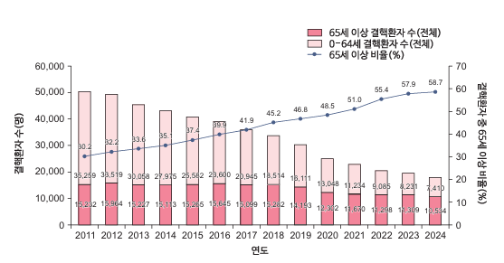
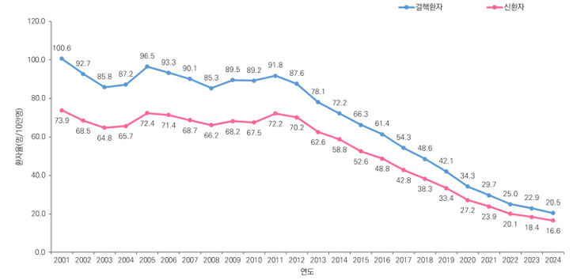
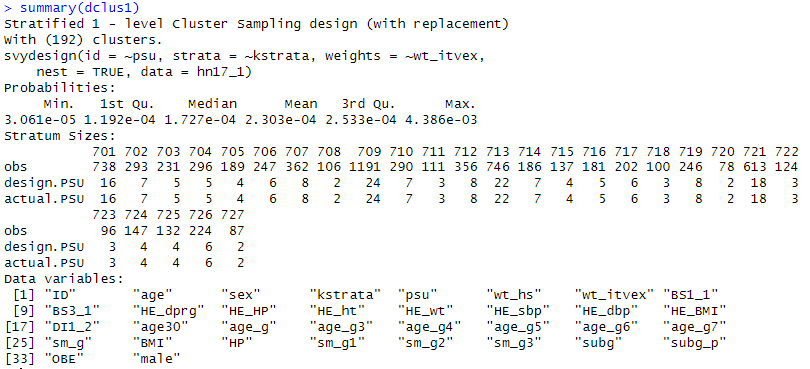
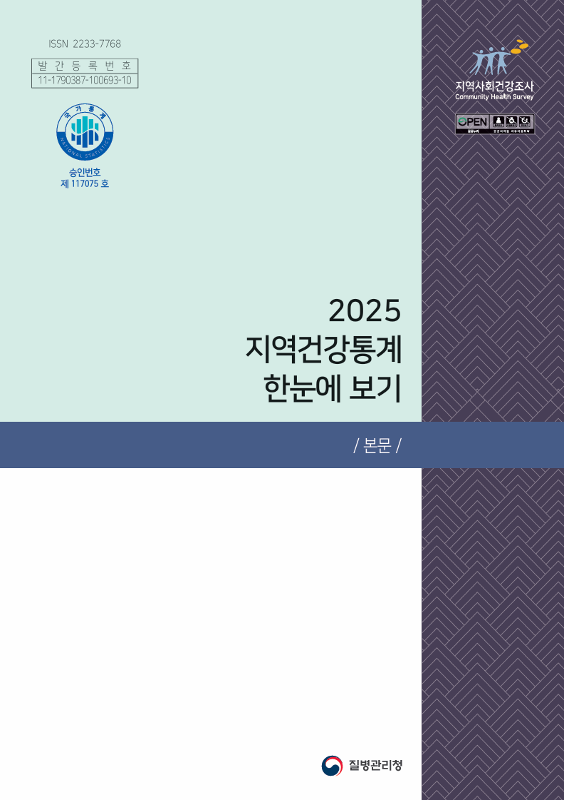
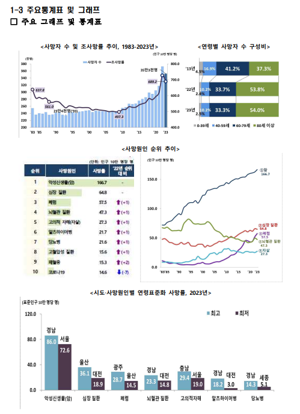

보건의료 데이터 자료집
보건의료 연구자가 활용할 수 있는 국내 공공·임상·연구데이터를 제공기관별로 정리했습니다. 데이터의 범위와 최신성, 신청 절차와 난이도, 결합 가능 여부를 항목마다 같은 형식으로 확인할 수 있습니다.
데이터 색인
검색창에 기관명이나 데이터명을 입력하면 아래 목록과 목차가 함께 좁혀집니다. 난이도는 각 데이터의 ‘데이터 획득’ 항목에 표기된 신청 난이도입니다.
3. 공공데이터 24건
4. 임상데이터 4건
5. 연구데이터 7건
6. 국내외 보건의료 데이터 플랫폼 19건
7. 부록 4건
검색어와 맞는 데이터가 없습니다. 기관명(예: 질병관리청)이나 데이터명 일부로 다시 찾아보세요.
보건의료 데이터 자료집 개요
1.1 발간 목적
본 자료집은 보건의료 연구자가 활용 가능한 공공데이터, 임상데이터 및 연구데이터를 제공기관별로 탐색할 수 있도록 데이터의 성격, 범위, 이용 절차와 활용 가능성을 통합 정리하는 것을 목적으로 한다.
1.2 수록 범위
수록 대상은 중개포털에서 검색 가능하며 보건의료 연구에서 활용 가능성이 높은 국내 데이터이며, 단독 이용이 제한되고 결합·연계 절차를 전제로 하는 데이터는 부록으로 구분하였다. 국내 주요 데이터 구축 사업과 국외 플랫폼 사례는 비교·참고 정보로 별도 수록하였다.
1.3 데이터 분류체계
데이터는 생성 목 적과 관리체계를 기준으로 공공데이터, 임상데이터, 연구데이터로 구분하고, 각 카테고리 안에서 제공기관 → 조사·사업 → 세부 DB 순으로 나타낸다. 단독 이용 제한 또는 결합·연계 활용 데이터는 8장 부록에 별도로 수록한다.
1.4 자료집 이용 방법
먼저 목차와 총괄 현황에서 연구 주제에 적합한 데이터와 제공기관을 확인한 뒤, 각 데이터 설명의 ‘데이터 범위 및 최신성’, ‘데이터 획득’, ‘데이터 결합’ 항목을 순서대로 검토한다. 단독 신청이 제한되는 데이터는 8장 부록의 결합·연계 이용조건을 추가로 확인한다.
1.5 이용 시 유의사항
데이터 공개연도, 규모, 신청 절차, 비용 및 심의 요건은 제공기관 정책에 따라 변경될 수 있으며, 실제 이용 전에는 반드시 제공기관의 최신 공고와 지침을 확인한다.
데이터 총괄 현황
2.1 수록 데이터 현황
현재 자료집에는 총 39개 데이터 항목을 수록하고 있으며, 본문 36개와 부록의 결합·연계 활용 데이터 4개로 구성한다.
- 공공데이터: 23개
- 임상데이터: 5개
- 연구데이터: 7개
- 부록(결합·연계 활용 데이터): 4개
- 제공기관 그룹: 본문 22개, 부록 4개(동일 기관의 복수 카테고리는 각각 집계)
| 대분류 | 제공기관 | 조사·사업 / 데이터명 | |
|---|---|---|---|
| 공공 데이터 |
질병관리청 | 결핵환자 신고현황 DB | |
| 공공 데이터 |
질병관리청 | 국민건강영양조사 | 기본 DB |
| 공공 데이터 |
질병관리청 | 국민건강영양조사 | 대기오염 DB |
| 공공 데이터 |
질병관리청 | 급성심장정지 DB | |
| 공공 데이터 |
질병관리청 | 예방접종 DB | |
| 공공 데이터 |
질병관리청 | 응급실손상환자 DB | |
| 공공 데이터 |
질병관리청 | 지역사회건강조사 DB | |
| 공공 데이터 |
질병관리청 | 지역사회기반 중증외상 DB | |
| 공공 데이터 |
질병관리청 | 퇴원손상심층조사 DB | |
| 공공 데이터 |
국가데이터처 | 사망원인조사 DB | |
| 공공 데이터 |
국민건강보험공단 | 국민건강정보데이터 | 표본연구DB |
| 공공 데이터 |
국민건강보험공단 | 국민건강정보데이터 | 노인코호트 DB |
| 공공 데이터 |
국민건강보험공단 | 국민건강정보데이터 | 자격 DB |
| 공공 데이터 |
국민건강보험공단 | 국민건강정보데이터 | 진료 DB |
| 공공 데이터 |
국민건강보험공단 | 국민건강정보데이터 | 건강검진 DB |
| 공공 데이터 |
국민건강보험공단 | 국민건강정보데이터 | 노인장기요양 DB |
| 공공 데이터 |
국민건강보험공단 | 국민건강정보데이터 | 요양기관 DB |
| 공공 데이터 |
국민건강보험공단 | 국민건강정보데이터 | 맞춤형연구DB |
| 공공 데이터 |
건강보험 심사평가원 |
보건의료 빅데이터 개방시스템 | 환자표본자료 및 맞춤형 DB |
| 공공 데이터 |
국립중앙의료원 | 국가응급의료 DB | |
| 공공 데이터 |
국립재활원 | 장애인건강보건통계 DB | |
| 공공 데이터 |
국립암센터 | 암등록사업 | 국가암등록 DB |
| 공공 데이터 |
K-CURE | 암 공공 라이브러리 | |
| 공공 데이터 |
병무청 | 병역판정검사 DB | |
| 임상 데이터 |
K-CURE | 암 임상 라이브러리 | |
| 임상 데이터 |
의료데이터 중심병원 |
기관별 임상 데이터 | |
| 임상 데이터 |
대한뇌졸중학회 | 뇌졸중 등록사업 | 뇌졸중 등록사업 DB |
| 임상 데이터 |
한국장기 이식연구단 |
장기이식 등록연구 | 한국 장기이식 등록연구 DB |
| 연구 데이터 |
국립정신건강센터 | 정신건강실태조사 | 성인, 소아·청소년, 중증정신질환자 및 마약류 사용자 마이크로데이터 |
| 연구 데이터 |
한국지능정보사회진흥원(NIA) | 인공지능 학습용 데이터 | AI Hub 보건의료 AI 학습용 데이터셋 |
| 연구 데이터 |
한국과학기술정보연구원(KISTI) | 국가 연구데이터 플랫폼 | DataON 보건의료 연구데이터 카탈로그 |
| 연구 데이터 |
치매극복연구개발사업단 | 치매 연구 코호트 | KDRC 표준 치매 코호트 (TRR) |
| 연구 데이터 |
한국보건사회 연구원 |
한국복지패널 DB | |
| 연구 데이터 |
질병관리청 (국립보건연구원) |
한국인유전자 역학조사사업 |
한국인유전체역학조사사업(KoGES) 공개자료 |
| 연구 데이터 |
질병관리청 (국립보건연구원) |
국가보건의료연구자원정보 수집·공유 및 활용 플랫폼 | CODA 임상·오믹스 연구데이터 카탈로그 |
| 부록: 결합·연계 활용 데이터 | 국립중앙의료원 | 치매관리 DB | |
| 부록: 결합·연계 활용 데이터 | 국립장기조직혈액관리원 | 장기·조직 기증 및 이식 | 국립장기조직혈액관리원 장기관리정보 DB |
| 부록: 결합·연계 활용 데이터 | 국립재활원 | 국립재활원 재활관리정보 | 국립재활원 재활관리정보 DB |
| 부록: 결합·연계 활용 데이터 | 국민건강보험공단 | 국민건강보험공단 일산병원 환자관리정보 DB |
2.2 카테고리별 구성
공공데이터는 국가·공공기관이 행정, 조사 및 통계 목적으로 구축하고 단독 신청 또는 공개자료 이용이 가능한 자료를 중심으로 구성되어 있다.
임상데이터는 의료기관 또는 임상 컨소시엄에서 환자 진료와 등록사업을 통해 구축하고 개별 심의 후 이용 가능한 자료를 중심으로 구성되어 있다.
연구데이터는 코호트, 연구과제, 학습용 데이터 및 연구자 기탁자료를 중심으로 구성되어 있다.
부록은 단독 이용이 제한되거나 타 기관 데이터와의 결합·연계 절차를 전제로 제공되는 데이터를 별도로 정리한다.
2.3 데이터 접근 유형
즉시 다운로드
: 공개 원시자료 또는 통계자료를 신청·승인 후 내려받아 분석하는 방식
심의 필요
: 제공기관 심의를 받아 제공받은 데이터를 지정된 분석환경에서 분석하고 승인된 결과만 반출하거나 심의 이후 원시자료를 다운로드하여 분석하는 방식
연계·결합
: 특정 플랫폼을 통해 연계·결합 절차를 거쳐 제한적으로 이용하는 방식
※ 각 데이터의 실제 접근 유형과 단독 이용 가능 여부는 최신 제공정책과 심의 기준 확인이 필요합니다.
2.4 데이터별 표준 수록 항목
각 데이터 설명은 개요, 데이터 범위 및 최신성, 데이터 형태 및 분석 환경, 데이터 획득, 데이터 결합, 구성, 관련 연구, 데이터 미리보기 순으로 구성합니다.
2.5 편집·검토 표시 기준
- 검증 기준: 제공기관의 공식 포털·카탈로그·사용자 매뉴얼을 우선하며, 사업·플랫폼과 실제 데이터셋을 구분
- 갱신 기준: 수록 기간·규모·비용·심의절차는 발간 기준일에 공식 공고와 재대조하고 기준일을 표지에 명시
공공데이터
3.1 질병관리청
3.1.1 결핵환자신고현황
개요
결핵환자신고현황(이하 결핵신고DB)는 「감염병의 예방 및 관리에 관한 법률」에 따라 신고된 결핵 환자의 정보를 수집한 자료입니다. 국내 결핵 발생 현황을 정확히 파악하여 결핵 관리 정책의 기초 자료로 활용되며, 환자의 인적 사항부터 확진 시 검사 결과, 치료 경과까지 포함하고 있어 감염병 역학 연구에 핵심적인 데이터를 제공합니다.
데이터 범위 및 최신성
- 확보 연도: 2013년 ~ 2024년
- 업데이트 주기: 연 1회(24년 DB의 경우 25년 3월 말 업로드)
- 규모: 24년 DB 신환자 14,412명, 누적 약 367,000명 (전수조사)
데이터 형태 및 분석 환경
- 제공 형태: 텍스트 파일(.csv)
- 분석 언어/도구: SAS, SPSS, STATA, R <모든 언어의 기초코드 제공>
- 주요 변수 체계: 환자 기본정보, 진단 정보, 치료 정보
- 가중치/표본설계 정보: 해당 없음 (전수조사)
데이터 획득신청 난이도 하 ●○○
- 성격: 정부지정통계(승인번호 제117107호)
- 설계: 전수조사(신고 기반)
- 단위: 개인 단위
- 방법: MDIS > 자료이용 > 다운로드서비스 > 보건 > 결핵환자신고현황, 신청 후 바로 다운로드 가능 (https://mdis.mods.go.kr/index.do)
- IRB 필요 여부: 필요 없음
- 비용: 무료
- 제한 변수: 이름, 주민등록번호, 상세 주소 등 식별 정보 비공개
데이터 결합
- 개인단위 결합 가능 여부: 가능(보건의료 빅데이터 통합플랫폼을 통한 기관 간 가명정보 결합 지원)
구성 <항목정의서 대체자료 존재(결핵환자신고현황_파일설계서)>
- 환자 기본정보: 성별, 연령, 거주지(시도 단위), 외국인 여부 등
- 진단 정보: 신고기관 유형, 진단일, 진단 시 도말/배양 검사 결과, 약제내성 검사 결과 등
- 치료 정보: 치료 시작일, 치료 결과(완치, 실패, 사망 등), 약제 처방 내역 등
관련 연구
추후 업데이트 예정
Data preview


3.1.2 국민건강영양조사
3.1.2.1 국민건강영양조사 기본 DB
개요
국민건강영양조사(이하 국건영) 기본DB는 우리 국민의 건강 및 영양 상태를 파악하기 위해 질병관리청에서 실시하는 대표적인 국가 승인 통계자료입니다. 국건영은 전국 단위 확률 표본을 기반으로 건강설문조사, 검진조사, 영양조사를 실시하여 국민의 주요 보건지표를 산출하며, 1998년부터 수행되어 온 반복 단면 조사로 장기 시계열 데이터를 제공합니다.
데이터 범위 및 최신성
- 확보 연도: 1998년 ~ 2024년
- 업데이트 주기: 연 1회(24년 DB의 경우 12월 최종업로드) 1998~2005: 3년주기, 2007~: 1년 주기
- 규모: 24년 DB 9,814명, 누적 215,103명
데이터 형태 및 분석 환경
- 제공 형태: SAS dataset (.sas7bdat) / SPSS file(.sav)
- 분석 언어/도구: SAS <코드 제공>, R, Python
- 주요 변수 체계: 설문/검진/영양 모듈 분리
- 가중치/표본설계 정보: 표본설계 가중치 제공 (분석시 설계 반영 필요)
데이터 획득신청 난이도 하 ●○○
- 성격: 정부지정통계(승인번호 제117002호)
- 설계: 층화·집락·가중치 적용된 복합표본 설계
- 단위: 개인 단위(단면 반복조사)
- 방법: 질병관리청 국민건강영양조사 > 원시자료 > 다운로드, 신청 후 바로 다운로드 가능
(https://knhanes.kdca.go.kr/knhanes/main.do)
- IRB 필요 여부: 필요 없음
- 비용: 무료
- 제한 변수: 시·군·구 단위 세부 지역 정보 등 개인 식별 위험이 있는 민감 변수 비공개
데이터 결합
- 연계자료 이용신청: 질병관리청 누리집을 통해 타 공공기관 자료와 연계된 특수 목적 DB 신청 가능
- 사망원인통계: 국건영 대상자의 사망 여부 및 원인 정보 연계
- 대기오염DB: 거주지역별 대기오염 노출 농도 정보 연계
- 학술연구자료 신청: 제한공개자료(조사일, 조사지역)가 포함된 연구용 자료 신청 지원
- 개인단위 결합 가능 여부: 가능 (보건의료 빅데이터 통합플랫폼을 통한 기관 간 가명정보 결합 지원)
구성
- 건강설문조사: 인구사회학적 특성, 질병 이력, 의료이용, 건강행태
- 검진조사: 신체계측, 혈압, 혈액·소변 검사 결과
- 영양조사: 식품섭취조사, 영양소 섭취량
관련 연구
추후 업데이트 예정
Data preview

3.1.2.2 대기오염 DB
개요
국민건강영양조사(이하 국건영) 대기오염 연계 DB는 국건영 참여자의 거주지 정보와 인근 측정망의 대기오염 농도 자료를 연계한 특수 목적 데이터셋입니다. 미세먼지(PM10, PM2.5), 이산화질소(NO2) 등 주요 대기오염 물질 노출량과 개별 건강 지표를 결합하여 환경 보건 연구를 수행할 수 있도록 지원합니다.
데이터 범위 및 최신성
- 확보 연도: 2007년 ~ 2022년 *대기오염 물질별로 확보 시작 연도가 상이함
- 업데이트 주기: 비정기적(기본 DB 확정 후 대기오염 농도 매칭 및 가공 작업 거쳐 공개)
※기본 DB 확정 후 대기오염 농도 매칭 및 가공 과정으로 인한 약 1~2년의 시차 발생
- 규모: 22년 DB 6,265명, 누적(07~22) 약 125,000명 (연계 성공 대상자 기준)
데이터 형태 및 분석 환경
- 제공 형태: SAS dataset(.sas7bdat), SPSS(.sav)
- 분석 언어/도구: SAS, R, Python
- 주요 변수 체계: 국건영 기본 변수 + 대기오염 물질별 노출량(일평균, 월평균, 연평균 등)
- 가중치/표본설계 정보: 국건영 기본DB의 복합표본 설계 가중치 활용 필수
데이터 획득신청 난이도 중 ●●○
- 유형: (국건영-환경 데이터 결합본)
- 성격: 환경보건 연구를 위한 특수 목적 연계 DB
- 설계: 국건영 대상자의 지리적 위치 정보를 활용한 시공간적 노출 농도 추정법 적용
- 단위: 개인 단위 (위치 기반 연계자료)
- 방법: 질병관리청 국민건강영양조사 > 원시자료 > 연계자료, 신청 후 바로 다운로드 가능
(https://knhanes.kdca.go.kr/knhanes/main.do)
- IRB 필요 여부: 필요 없음
- 비용: 무료
- 제한 변수: 읍·면·동 단위 주소 정보 자체는 비공개이며, 결합된 '농도 값' 형태로만 제공됨
데이터 결합
- 연계자료 이용신청: 기본 DB 원시자료를 반드시 함께 획득해야 함
- 사망원인 연계자료: 대기오염 노출 농도에 따른 특정 질환 사망 위험도(HR) 분석 가능
- 기상청 기상 관측 자료: 온도, 습도 등 기상 요인을 추가하여 대기오염의 건강 영향에 대한 보정 연구 가능
- 학술연구자료 신청: 질병관리청 누리집을 통해 연구계획서 승인 후 제공 (즉시 다운로드 불가)
- 개인단위 결합 가능 여부: 가능 (보건의료 빅데이터 통합플랫폼을 통해 국민건강보험공단 진료 내역과 결합 시, 대기오염 노출이 실제 병원 이용 및 의료비에 미치는 영향까지 확장 연구 가능)
구성
- 대기오염 항목: 미세먼지(PM10, PM2.5), 이산화질소(NO2), 아황산가스(SO2), 일산화탄소(CO), 오존(O3)
- 노출 지표: 조사 시점 기준 단기/중기/장기 평균 노출량
관련 연구
추후 업데이트 예정
Data preview
'국건영 대상자별 미세먼지 노출 농도와 건강검진 결과값 결합 테이블 구조 예시'
3.1.3 급성심장정지조사
개요
급성심장정지조사 데이터는 119 구급대에 의해 이송된 급성심장정지 환자의 발생 규모, 생존율, 치료 결과 등을 파악하기 위해 질병관리청에서 수행하는 국가 승인 통계자료입니다. 구급대 이송 기록과 병원 진료 기록을 통합하여 심장정지 환자의 전 과정을 추적 관리합니다.
데이터 범위 및 최신성
- 확보 연도: 2008년 ~ 2024년
- 업데이트 주기: 연 1회(24년 DB의 경우 26년 2월 최종 업로드)
- 규모: 24년 DB 약 3.3만건, 누적 약 55만건 (전수조사)
데이터 형태 및 분석 환경
- 제공 형태: SAS dataset(.sas7bdat), SPSS(.sav), Excel file(.xlsx)
- 분석 언어/도구: SAS, R, Python
- 주요 변수 체계: 발생 장소, 원인, 심폐소생술 시행 여부, 생존 결과 등
- 가중치/표본설계 정보: 해당 없음 (전수조사)
데이터 획득신청 난이도 중 ●●○
- 성격: 국가 승인 통계(제117088호)
- 설계: 전국 119구급대 및 의료기관 기반 전수조사
- 단위: 사건(Case) 단위
- 방법: 국가손상정보포털 > 자료실 > 원시자료신청, 소관부서 심사 후 승인/반려
(https://mdis.mods.go.kr/index.do / MDIS에서도 다운로드 가능)
- IRB 필요 여부: 질병관리청 IRB 승인 데이터로, 연구자 소속기관 IRB 심의 권고
- 비용: 무료
- 제한정보: 성명, 주민번호 등 개인식별정보 및 이송 구급대·의료기관 명칭, 상세 발생지(시군구 이하) 등 비공개
데이터 결합
- 연계자료 이용신청: 해당 없음
구성
- 발생 전 상황: 심장정지 인지 시점, 목격자 여부
- 구급대 활동: 현장 도착 시간, 현장 심폐소생술 및 제세동 시행 여부
- 병원 내 처치: 응급실 처치, 최종 생존 상태 및 뇌기능 결과(CPC score)
관련 연구
추후 업데이트 예정
Data preview
'119 구급활동(현장 처치) → 응급실 이송 → 병원 내 가료 → 생존 퇴원/사망 결과로 이어지는 단계별 데이터 수집 체계도’ '일반인 심폐소생술 시행률 추이' 또는 '심장정지 발생 장소별 비중' 차트 summary() info() | 발생 정보 | PLACE_TYPE | 발생 장소 (공공장소, 비공공장소 등) | | 목격자 정보 | WITNESS | 목격자 여부 및 일반인 CPR 시행 여부 | | 구급대 정보 | ROSC_PRE | 병원 도착 전 자발순환 회복 여부 | | 병원 결과 | SURVIVAL | 생존 퇴원 여부 (0:사망, 1:생존) | | 예후 정보 | CPC_SCORE | 퇴원 시 뇌기능 상태 (1:양호 ~ 5:사망) |
3.1.4 예방접종 DB
개요
예방접종 DB는 「감염병의 예방 및 관리에 관한 법률」에 따라 실시된 국가예방접종(NIP) 및 기타 예방접종 기록을 관리하는 데이터입니다. 전 국민의 백신별 접종 이력, 접종 시기, 접종 기관 정보를 포함하고 있어 백신의 면역 효과 분석, 접종률 추이 연구 및 이상반응 역학조사에 필수적인 기초 자료입니다.
데이터 범위 및 최신성
- 확보 연도: 2002년 ~ 2024년
- 업데이트 주기: 연 1회 (24년 DB의 경우 25년 12월 최종 업로드)
- 규모: 24년 접종 건수 약 3,500만 건, 누적 약 5억 건 이상 (전수조사)
데이터 형태 및 분석 환경
- 제공 형태: SAS dataset(.sas7bdat), CSV file(.csv)
- 분석 언어/도구: SAS, R, Python
- 주요 변수 체계: 백신 종류, 접종 차수, 접종 일자, 접종 기관 특성
- 가중치/표본설계 정보: 해당 없음 (전수조사)
데이터 획득신청 난이도 중 ●●○
- 제공기관: 질병관리청 (질병보건통합관리시스템)
- 성격: 행정 등록 데이터 기반 연구 DB
- 설계: 예방접종 통합관리시스템 기반 전수조사
- 단위: 접종 건 단위 / 개인 단위 연계 가능
- 방법: 질병보건통합관리시스템을 통해 원시자료 이용 신청 및 연구계획서 제출 → 심의 승인 후 제공 (https://is.kdca.go.kr/)
- IRB 필요 여부: 필수 (개인별 접종 이력이 포함된 마이크로데이터이므로 소속기관 IRB 승인 필요)
- 비용: 무료
- 제한정보: 개인식별정보(성명, 상세주소) 및 특정 의료기관 명칭 비공개
데이터 결합
- 연계자료 이용신청: 질병관리청 내 타 감염병 DB와의 연계 지원
- 이상반응 연계자료: 특정 백신 접종 후 신고된 이상반응 사례와의 매칭 데이터 신청 가능
- 학술연구자료 신청: 연구 목적에 따라 특정 백신(예: 코로나19, HPV) 접종군에 특화된 상세 데이터셋 지원
구성
- 대상자 정보: 성별, 연령대, 거주지역(시도 단위)
- 접종 정보: 백신 코드, 백신 제조사, 접종 차수, 접종 연월일
- 기관 정보: 의료기관 종별(의원, 병원 등), 소재지
관련 연구
추후 업데이트 예정
Data preview
'백신 종류별 연도별 접종 건수 추이' 막대 그래프 '생애주기별 필수 예방접종 타임라인' summary() info() VAC_CD: 백신 종류 코드 VAC_DEGREE: 접종 차수 (1차, 2차 등) VAC_DATE: 실제 접종일 ORG_TYPE: 접종 시행 기관 구분
3.1.5 응급실손상환자심층조사
개요
응급실손상환자심층조사는 손상으로 인해 응급실에 내원한 환자를 대상으로 손상 발생 원인, 장소, 활동 등 상세한 경위를 조사한 자료입니다. 질병관리청이 지정한 전국 20여 개 참여 병원 응급실을 통해 수집되며, 국가 손상 예방 정책 수립 및 안전 가이드라인 개발의 기초 자료로 활용됩니다.
데이터 범위 및 최신성
- 확보 연도: 2006년 ~ 2024년
- 업데이트 주기: 연 1회 (24년 DB의 경우 12월 최종 업로드)
- 규모: 24년 DB 약 28만 건, 누적 약 400만 건 이상 (조사 참여 병원 전수
데이터 형태 및 분석 환경
- 제공 형태: SAS dataset(.sas7bdat), CSV file(.csv)
- 분석 언어/도구: SAS, R, Python
- 주요 변수 체계: 손상 기전(추락, 운수사고 등), 손상 발생 시 활동, 의도성 여부, 손상 결과
- 가중치/표본설계 정보: 국가 대표성을 확보하기 위한 층화 가중치 포함
데이터 획득신청 난이도 하 ●○○
- 유형: 정형 데이터
- 성격: 국가 승인 통계(제117054호)
- 설계: 표집된 23개 대학병원 및 의료기관 응급실 기반 심층 조사
- 단위: 사건(Case) 단위
- 방법: 질병관리청 손상정보포털 내 원시자료 신청 메뉴에서 서약서 제출 후 즉시 다운로드 (https://www.kdca.go.kr/injury/)
- IRB 필요 여부: 질병관리청 IRB 승인 완료 데이터로 소속기관 IRB 면제
- 비용: 무료
- 제한정보: 개인 식별정보(성명, 상세주소) 및 특정 의료기관 명칭 비공개
데이터 결합
- 연계자료 이용신청: 손상정보포털 내 타 심층조사와 연계 분석 권장
- 특정 손상 기전(교통사고 등)에 특화된 심층 자료와 결합 지원
- 학술연구자료 신청: 원시자료 외에 특정 연도별/항목별 통계 가공 서비스 지원
구성
- 일반 정보: 성별, 연령, 내원 일시, 내원 수단
- 손상 내용: 손상 발생 일시, 장소, 유발 물질(객체), 손상 부위 및 양상
- 심층 항목: 의도성(자해/타해 여부), 음주 여부, 안전벨트/헬멧 착용 여부
- 진료 결과: 응급실 진료 결과(귀가/입원), 입원 후 결과(생존/사망)
관련 연구
추후 업데이트 예정
Data preview
'손상 기전별(추락, 미끄러짐, 충돌 등) 발생 비중' 인포그래픽 summary() info() INJ_MECH: 손상 기전 코드 INJ_PLACE: 손상 발생 장소(거실, 도로, 공사장 등) INTENT: 손상 의도성(의도적 자해, 비의도적 사고 등) ALCOHOL: 사고 당시 음주 여부
3.1.6 지역사회건강조사(CHS)
개요
지역사회건강조사 DB는 질병관리청과 전국 258개 보건소가 주관하며, 「지역보건법」에 따라 지역 주민의 건강 실태를 파악하여 밀착형 보건 의료계획 수립 및 평가를 위한 근거 데이터를 제공합니다.
데이터 범위 및 최신성
- 확보 연도: 2008년 ~ 2024년
- 업데이트 주기: 연 1회 (보통 익년 1분기 원시자료 공개)
- 규모: 매년 약 23만 명 (전국 단위 통합 분석 및 지역 간 비교 가능)
데이터 형태 및 분석 환경
- 제공 형태: SAS dataset(.sas7bdat), TXT file(.txt)
- 분석 언어/도구: SAS, R, Python, SPSS
- 주요 변수 체계: 건강행태(흡연, 음주), 만성질환 이환(고혈압, 당뇨), 손상, 삶의 질(EQ-5D), 의료이용
- 가중치/표본설계 정보: 복합표본설계 변수(층화, 집락, 가중치) 적용 필수
데이터 획득신청 난이도 하 ●○○
- 성격: 가구 방문 면접 조사 기반 데이터
- 설계: 전국 258개 시·군·구 보건소별 약 900명 표본 (계통추출법)
- 단위: 개인 단위
- 방법: 지역사회건강조사 누리집에서 원시자료 이용신청서 및 서약서 제출 → 즉시 또는 단기간 내 승인 후 다운로드 (https://chs.kdca.go.kr/chs/)
- IRB 필요 여부: 연구용 사용 시 권장 (공공데이터로 면제 승인 용이)
- 비용: 무료
- 제한정보: 읍·면·동 단위 이하의 상세 지역 정보 및 개인 식별 정보 비공개
데이터 결합
- 연계자료 이용신청: 연계자료 이용신청: 통계청 가상번호를 활용한 타 기관(국민건강보험공단 등) 데이터와의 연계 연구 가능 (별도 심의)
- 지역사회건강-국민건강보험공단 연계 DB: 지역사회건강조사 응답자의 건강행태 데이터와 국민건강보험공단의 진료/검진 내역을 결합한 연구용 데이터셋 신청 가능
- 학술연구자료 신청: 누리집을 통해 원시자료(마이크로데이터) 및 연도별 통합자료 제공
구성 <항목정의 대체자료 존재(원시자료이용지침서)>
- 건강행태: 현재 흡연 여부, 고위험 음주율, 걷기 실천율, 영양 표시 독해 여부
- 이환관리: 고혈압/당뇨병 의사 진단 경험 및 약물 복용 여부, 안저검사 수신율
- 심리사회: 우울감 경험률, 스트레스 인지율, 주관적 건강 수준
관련 연구
추후 업데이트 예정

Data preview
'시도별 걷기 실천율 및 비만율 상관관계' 산점도 '연도별 만성질환 관리율 추이' 라인 차트 summary() info() EX_WALK_DAYS: 최근 1주일간 1일 30분 이상 걷기 일수 DIAB_DIAG: 당뇨병 의사 진단 여부 WT_AVG: 분석용 복합표본 가중치
3.1.7 지역사회기반 중증외상조사
개요
지역사회기반 중증외상조사 DB는 질병관리청과 소방청이 협력하여 구축하며, 중증외상 환자의 발생부터 이송, 응급실 진료, 최종 치료 결과까지 전 과정을 추적하여 국가 손상 예방 및 외상 진료 체계 개선에 활용됩니다.
데이터 범위 및 최신성
- 확보 연도: 2012년 ~ 2024년
- 업데이트 주기: 연 1회
- 규모: 연간 약 3만 명 내외의 중증외상 사례
데이터 형태 및 분석 환경
- 제공 형태: SAS dataset(.sas7bdat), CSV file(.csv)
- 분석 언어/도구: SAS, R, Python, SPSS
- 주요 변수 체계: 손상 기전(추락, 교통사고 등), 사고 장소, 구급차 내 처치, ISS(손상중증도점수), 치료 결과(사망/생존)
- 가중치/표본설계 정보: 전수조사 성격이 강하나 연도별 보정치 확인 필요
데이터 획득신청 난이도 중 ●●○
- 유형: 정형 데이터
- 성격: 구급활동 및 의무기록 기반 추적 조사 데이터
- 설계: 중증외상 환자 및 다수사상 사고 대상 전수 조사
- 단위: 사건/개인 단위
- 방법: 질병관리청 국가손상정보포털에서 신청 → 연구 계획서 심의 → 데이터 제공
(https://www.kdca.go.kr/injury/)
- 질병관리청 IRB 승인 완료 데이터(소속기관 IRB 면제/권고 사항)
- 비용: 무료
- 제한정보: 사고 발생 상세 지점, 의료기관 식별 정보 등 민감 정보 제한
데이터 결합
- 연계자료 이용신청: 소방청-응급의료기관-질병관리청 간 연계된 통합 외상 DB 제공
- 사고 현장의 구급 활동 일지와 병원의 중증외상 조사 자료가 결합된 형태의 데이터 신청 가능
- 개인단위 결합 가능 여부: 가능 (국가 손상조사감시체계 데이터 결합 지원)
구성
- 손상 기전(Blunt/Penetrating), 의도성 여부, 사고 시 활동(업무/여가)
- 임상지표: 초기 활력징후(SBP, RR, GCS), 손상 부위별 AIS 점수, 최종 ISS 점수
- 치료결과: 응급실 결과, 중환자실 체류 일수, 퇴원 시 기능 상태(GOS/mRS)
관련 연구
추후 업데이트 예정
Data preview
'연령대별 손상 기전 분포' 파이 차트 '이송 시간대별 사망률 분석' 히트맵 summary() info() INJ_MECHANISM: 손상 기전 코드 (1: 교통사고, 2: 추락 등) ISS_SCORE: Injury Severity Score (손상 중증도 점수) OUTCOME_STATUS: 최종 생존 상태
3.1.8 퇴원손상심층조사
개요
퇴원손상심층조사는 질병관리청에서 의료기관 퇴원환자의 의무기록을 바탕으로 질병 및 손상 양상을 파악하는 조사입니다. 전국의 100병상 이상 일반병원 중 표본으로 선정된 의료기관을 대상으로 하며, 국민의 입원 유병률 및 손상 발생 규모를 파악하여 만성질환 및 손상 예방 정책의 기초 자료로 활용됩니다.
데이터 범위 및 최신성
- 확보 연도: 2005년 ~ 2024년
- 업데이트 주기: 연 1회 (24년 DB의 경우 12월 최종 업로드)
- 규모: 24년 DB 약 25만 건, 누적 약 380만 건 이상 (표본 추출 기반)
데이터 형태 및 분석 환경
- 제공 형태:SAS dataset(.sas7bdat), CSV file(.csv)
- 분석 언어/도구: SAS, R, Python
- 주요 변수 체계: 주진단/부진단(ICD-10), 손상외인, 수술/처치여부, 입원 및 퇴원 경로
- 가중치/표본설계 정보: 국가 전체 입원 환자 수를 추정하기 위한 복합표본 가중치 포함
데이터 획득신청 난이도 하 ●○○
- 성격: 국가 승인 통계(제117051호)
- 설계: 100병상 이상 일반병원 표본(매년 약 200여 개소) 퇴원환자 추출조사
- 단위: 사건(Case) 단위 / 퇴원환자 단위
- 방법: 질병관리청 손상정보포털 내 신청서 제출 후 즉시 다운로드
(https://www.kdca.go.kr/injury/)
- IRB 필요 여부: 질병관리청 IRB 승인 완료 데이터(소속기관 IRB 면제/권고 사항)
- 비용: 무료
- 제한정보: 개인 식별정보(성명, 상세주소) 및 특정 의료기관(병원명) 정보 비공개
데이터 결합
- 연계자료 이용신청: 입원환자 중 손상으로 인한 퇴원자만 추출한 연계 자료 제공
- 입원환자 중 손상으로 인한 퇴원자만 추출한 연계 자료 제공
- 학술연구자료 신청: 다년도 통합 분석을 위한 연도별 가변수 매칭 가이드 지원
구성
- 환자 정보: 성별, 연령, 거주지(시도), 건강보험 종별
- 진료 정보: 입원일, 퇴원일, 재원일수, 주상병/부상병(최대 20개), 수술/처치여부
- 손상 정보: 손상 외인 코드(원인), 손상 발생 장소, 손상 시 활동
- 결과 정보: 퇴원 형태(귀가, 전원, 사망), 입원 경로(외래, 응급실)
관련 연구
추후 업데이트 예정
Data preview
'주요 상병군별 평균 재원일수 비교' 차트 '퇴원환자 입원 경로 비중' 원형 그래프 summary() info() ADMISS_DATE / DISCH_DATE: 입퇴원 일자 DIAG_CODE: 주진단명 (KCD/ICD-10) INJ_CAUSE: 손상 원인 코드 DISCH_RESULT: 퇴원 후 결과 (정상퇴원, 전원 등)
3.2 국가데이터처
3.2.1 사망원인정보 DB
개요
사망원인정보 DB는 「가족관계의 등록 등에 관한 법률」에 따라 신고된 사망신고서와 의료기관의 사망진단서 등을 토대로 작성되는 국가 승인 통계입니다. 우리나라 국민의 사망 수준, 사망 원인 및 추이를 파악할 수 있는 가장 정확한 자료이며, 암·심혈관질환 등 주요 질환의 예후 연구 및 기대수명 산출의 기초가 됩니다.
데이터 범위 및 최신성
- 확보 연도: 1997년 ~ 2024년
- 업데이트 주기: 연 1회 (24년 DB의 경우 25년 12월 최종 업로드)
- 규모: 24년 사망자 약 35만 명, 누적 약 1,200만 명 이상 (전수조사)
데이터 형태 및 분석 환경
- 제공 형태: SAS dataset(.sas7bdat), CSV file(.csv), TXT file(.txt)
- 분석 언어/도구: SAS. SPSS, STATA, R, Python
- 주요 변수 체계: 사망 일시, 사망 장소, 사망 원인(ICD-10 코드), 인구학적 특성
- 가중치/표본설계 정보: 해당 없음 (전수조사)
데이터 획득신청 난이도 중 ●●○
- 성격: 정부지정통계(승인번호 제101003호)
- 설계: 전 국민 사망 전수조사
- 단위: 개인 단위(사망자 기준)
- 방법: MDIS 홈페이지 접속 → 로그인 → '자료이용' → 사망원인통계 선택 → 항목 선택 → 추출 후 자료 획득
(https://mdis.mods.go.kr/)
- 비용: 무료 (신청 항목 및 규모에 따라 상이)
- 제한정보: 성명, 주민번호 등 개인식별정보 및 상세 주소(시군구 이하) 비공개
데이터 결합
- 연계자료 이용신청: 국가데이터처 자체적으로 타 기관 데이터와의 결합 DB 제공
- 사망원인-인구동태 연계자료: 출생, 혼인, 이혼 정보와 사망 정보를 연계한 생애주기 분석 데이터 지원
- 연계 시 IRB 및 DRB 승인 필요할 수 있다
- 학술연구자료 신청: 연구 목적에 따라 특정 사인(예: 특정 암종, 외인사) 환자군만 추출한 상세 연구용 자료 신청 가능
- 개인단위 결합 가능 여부: 가능 (보건의료 빅데이터 통합플랫폼을 통한 기관 간 가명정보 결합 지원)
구성
- 인구학적 특성: 성별, 사망 당시 연령, 거주지, 교육 수준, 직업
- 사망 정보: 사망 연월일시, 사망 장소(병원, 자택 등)
- 사인 정보: 직접 사인, 중간 사인, 선행 사인, 최종 확정 사인(ICD-10 코드)
관련 연구
추후 업데이트 예정
Data preview
출처 : 이용자용 통계정보보고서_사망원인통계_2024

3.3 국민건강보험공단
3.3.1 국민건강정보데이터(표본연구DB)
개요
연구목적에 적합한 인구집단을 표본으로 추출하고, 개인을 직접 알아볼 수 없도록 가명처리한 후 주제별로 규격화한 데이터입니다.
표본연구DB는 연구자가 대상자를 처음부터 직접 추출하는 맞춤형연구 DB와 달리, 공단이 미리 정한 표본설계와 데이터 구조에 따라 구축된 고정형 코호트입니다. 동일한 가명 개인식별자를 이용해 자격, 진료, 건강검진, 요양기관 및 노인장기요양 자료를 연도별로 연결할 수 있어 질병 발생, 의료이용, 치료경로, 의료비 및 장기요양 이용을 장기간 추적하는 연구에 활용됩니다.
데이터 범위 및 최신성
- 표본코호트 DB 2.0은 2006년 기준 약 100만 명을 추출해 2002~2019년 자료를 제공한 공개 버전이 최신 버전이다.
- 코호트별 수록 기간·대상·갱신 여부가 다르므로 신청 시점의 NHISS 공고와 사용자 매뉴얼확인 필요하다.
데이터 형태 및 분석 환경
- 개인식별정보를 가명처리한 관계형 테이블로 제공되며, 연구자는 공단의 지정 분석환경에서 분석 가능.
- 진료·건강검진·자격 등 테이블은 개인대체키와 기준연도를 이용해 코호트 안에서 연결.
데이터 획득신청 난이도 중 ●●○
- NHISS에서 연구계획서와 변수목록을 제출하고 연구 적정성 심의·승인 및 비용 납부 후 이용 가능
- 신청 경로: https://nhiss.nhis.or.kr/
데이터 결합
- 표본연구DB 내부 테이블은 제공된 대체키로 결합할 수 있습니다.
- 외부자료와의 개인 단위 연계는 별도 결합 절차와 추가 심의가 필요하며 일반 다운로드 방식으로 수행하지 않습니다.
구성
- 주요 구성: 자격·보험료, 진료 명세서·진료내역·상병·처방, 건강검진, 요양기관, 노인장기요양 테이블.
- 코호트마다 사용할 수 있는 테이블과 변수 범위가 다릅니다.
관련 연구
추후 업데이트 예정
Data preview
추후 업데이트 예정
3.3.1.1 국민건강정보데이터(건강검진코호트DB)
개요
2002~2003년 국민건강보험공단 일반건강검진 수검자 가운데 당시 40∼79세였던 사람의 약 10%인 514,866명을 표본으로 선정하여 구축한 장기추적 코호트입니다.
표본대상자의 일반건강검진 결과를 건강보험 자격, 진료·처방, 요양기관 및 사망 관련 자료 등과 연결할 수 있도록 구성되어 있습니다. 동일 대상자가 건강검진을 반복해서 받은 경우 검진시점별 자료를 연결할 수 있어 혈압, 체질량지수, 혈당, 콜레스테롤 및 생활습관의 변화와 이후 질환 발생이나 의료이용 간의 연관성을 분석할 수 있습니다.
데이터 범위 및 최신성
- 사용자 매뉴얼 v2.3 기준 대상자는 514,866명이며 2002~2023년 자료를 수록.
- 갱신 범위는 최신 공고에서 확인 가능.
데이터 형태 및 분석 환경
- 자격, 진료, 건강검진, 요양기관, 사망연월·사망원인 등으로 구성된 가명처리 관계형 데이터입니다.
- 공단 지정 분석환경에서 SAS·R 등 승인된 도구를 사용합니다.
데이터 획득신청 난이도 중 ●●○
- NHISS를 통한 과제 신청, 심의, 이용계약 및 분석센터 이용 절차가 적용됩니다.
신청 경로: https://nhiss.nhis.or.kr/
데이터 결합
- 코호트 내 자격·진료·검진 테이블은 개인대체키로 연결합니다.
- 외부자료 연계는 별도의 가명정보 결합·반출 심의를 거칩니다. 비용납부가 필요할 수 있다
구성
- 핵심 테이블: 자격 및 보험료, 건강검진 문진·계측·검사, 진료명세서·상병·처방, 요양기관.
- 사망정보의 제공 범위와 최신성은 신청 버전에 따라 확인합니다.
관련 연구
추후 업데이트 예정
Data preview
추후 업데이트 예정
3.3.1.2 국민건강정보데이터(노인코호트DB)
개요
노인코호트DB는 2002년 기준 만 60세 이상 건강보험 가입자와 의료급여 수급권자 약 550만 명 가운데 10%를 단순무작위로 추출한 558,147명을 대상으로 구축한 고령 인구 특화 장기추적 코호트입니다.
건강보험 자격, 의료기관 이용, 진단·처치·약제처방, 건강검진 및 사망 관련 자료뿐만 아니라 2008년 도입된 노인장기요양보험의 신청, 인정조사, 등급판정 및 급여이용 자료를 함께 분석할 수 있도록 구성되어 있습니다.
데이터 범위 및 최신성
- 사용자 매뉴얼 v1.3 기준 약 51만 명 규모이며 건강보험 자료는 2002~2023년, 노인장기요양 자료는 2008~2023년을 수록합니다.
- 버전 2.0은 비교표에 따른 층화표본과 매년 신규 60세 진입자를 반영합니다.
데이터 형태 및 분석 환경
- 자격·진료·건강검진·요양기관·노인장기요양을 연결한 가명처리 관계형 데이터입니다.
- 공단 지정 분석환경에서 분석합니다.
데이터 획득신청 난이도 중 ●●○
- 연구계획 제출 및 심의 승인과 분석센터 이용 승인이 필요합니다. 비용납부가 필요할 수 있다
- 신청 경로: https://nhiss.nhis.or.kr/
데이터 결합
- 코호트 내 건강보험과 장기요양 테이블은 제공된 대체키로 연결합니다.
- 외부자료와의 연계는 별도 결합 승인 대상입니다.
구성
- 주요 구성: 자격, 진료, 건강검진, 요양기관, 장기요양 신청·인정조사·청구·시설 현황.
관련 연구
추후 업데이트 예정
Data preview
추후 업데이트 예정
3.3.1.3 국민건강정보데이터(자격 DB)
개요
자격 DB는 표본연구DB와 맞춤형연구DB를 구성하는 기본 테이블로, 연구대상자가 특정 시점에 건강보험 가입자, 피부양자 또는 의료급여 수급권자였는지를 확인할 수 있는 자격·사회경제 정보입니다.
연구대상자의 연도별 또는 월별 건강보험 자격상태와 보험료 부과정보를 이용해 관찰대상 기간을 설정하고, 가입자격 변동, 소득수준, 거주지역 및 사망 등에 따른 대상자 특성을 정의할 수 있습니다.
데이터 범위 및 최신성
- 수록 연도와 대상은 선택한 코호트 또는 맞춤형 과제의 승인 범위에 따라 달라집니다.
- 단독 상품으로 보기보다 연구DB 안에서 선택하는 구성 테이블로 이해해야 합니다.
데이터 형태 및 분석 환경
- 가명처리된 행·열형 관계형 테이블이며 개인·요양기관 대체키와 기준연도를 사용합니다.
- 공단 지정 분석환경에서 이용합니다.
데이터 획득신청 난이도 중 ●●○
- NHISS 과제 신청 시 필요한 테이블과 변수를 명시합니다. 비용납부가 필요할 수 있다
- 신청 경로: https://nhiss.nhis.or.kr/
데이터 결합
- 동일 승인 과제 안의 다른 건강보험 테이블과 대체키로 결합합니다.
- 외부기관 자료 결합은 별도 가명정보 결합 및 심의 절차가 필요합니다.
구성
- 주요 항목: 성별, 연령대, 지역, 가입자 구분, 자격 취득·상실, 보험료·소득분위, 장애·사망 관련 제공항목.
관련 연구
추후 업데이트 예정
Data preview
추후 업데이트 예정
3.3.1.4 국민건강정보데이터(진료 DB)
개요
진료 DB는 건강보험 또는 의료급여가 적용된 진료에 대해 요양기관이 국민건강보험공단에 비용을 청구한 내역을 연구용으로 구성한 테이블입니다. 표본연구DB와 맞춤형연구DB에서 질병 발생, 의료이용, 치료 및 비용을 분석하는 핵심 자료입니다.
데이터 범위 및 최신성
- 수록 연도와 대상은 선택한 코호트 또는 맞춤형 과제의 승인 범위에 따라 달라집니다.
- 단독 상품으로 보기보다 연구DB 안에서 선택하는 구성 테이블로 이해해야 합니다.
데이터 형태 및 분석 환경
- 가명처리된 행·열형 관계형 테이블이며 개인·요양기관 대체키와 기준연도를 사용합니다.
- 공단 지정 분석환경에서 이용합니다.
데이터 획득신청 난이도 중 ●●○
- NHISS 과제 신청 시 필요한 테이블과 변수를 명시합니다. 비용납부가 필요할 수 있다.
- 신청 경로: https://nhiss.nhis.or.kr/
데이터 결합
- 동일 승인 과제 안의 다른 건강보험 테이블과 대체키로 결합합니다.
- 외부기관 자료 결합은 별도 가명정보 결합 및 심의 절차가 필요합니다.
구성
- 주요 테이블: 명세서(20t), 진료내역(30t), 상병내역(40t), 처방전교부상세(60t) 및 요양기관 유형별 세부 테이블.
관련 연구
추후 업데이트 예정
Data preview
추후 업데이트 예정
3.3.1.5 국민건강정보데이터(건강검진 DB)
개요
건강검진 DB는 국민건강보험공단이 실시하거나 관리하는 국가건강검진의 수검내역, 문진결과, 신체계측 및 주요 임상검사 결과를 조사대상자 단위로 구성한 테이블입니다.
표본연구DB와 맞춤형연구DB에서 건강검진을 받은 사람의 검사수치와 건강행태를 진료 DB의 질병·의료이용 자료에 연결할 수 있도록 합니다. 진료청구자료만으로는 확인하기 어려운 비만, 혈압, 혈당, 혈중지질 및 생활습관 관련 위험요인을 분석할 수 있다는 장점이 있습니다.
데이터 범위 및 최신성
- 수록 연도와 대상은 선택한 코호트 또는 맞춤형 과제의 승인 범위에 따라 달라집니다.
- 단독 상품으로 보기보다 연구DB 안에서 선택하는 구성 테이블로 이해해야 합니다.
데이터 형태 및 분석 환경
- 가명처리된 행·열형 관계형 테이블이며 개인·요양기관 대체키와 기준연도를 사용합니다.
- 공단 지정 분석환경에서 이용합니다.
데이터 획득신청 난이도 중 ●●○
- NHISS 과제 신청 시 필요한 테이블과 변수를 명시합니다. 비용납부가 필요할 수 있다
- 신청 경로: https://nhiss.nhis.or.kr/
데이터 결합
- 동일 승인 과제 안의 다른 건강보험 테이블과 대체키로 결합합니다.
- 외부기관 자료 결합은 별도 가명정보 결합 및 심의 절차가 필요합니다.
구성
- 주요 항목: 문진, 신장·체중·허리둘레·혈압, 혈당·지질·간·신장기능 등. 제도개편에 따라 연도별 항목이 달라집니다.
관련 연구
추후 업데이트 예정
Data preview
추후 업데이트 예정
3.3.1.6 국민건강정보데이터(요양기관 DB)
개요
요양기관 DB는 건강보험 진료비를 청구한 병원, 의원, 치과, 한방의료기관, 약국 및 보건기관 등의 기관 특성을 정리한 테이블입니다. 진료 DB의 요양기관 연결키를 이용해 환자가 어떤 유형과 지역의 의료기관을 이용했는지 분석할 수 있습니다.
데이터 범위 및 최신성
- 수록 연도와 대상은 선택한 코호트 또는 맞춤형 과제의 승인 범위에 따라 달라집니다.
- 단독 상품으로 보기보다 연구DB 안에서 선택하는 구성 테이블로 이해해야 합니다.
데이터 형태 및 분석 환경
- 가명처리된 행·열형 관계형 테이블이며 개인·요양기관 대체키와 기준연도를 사용합니다.
- 공단 지정 분석환경에서 이용합니다.
데이터 획득신청 난이도 중 ●●○
- NHISS 과제 신청 시 필요한 테이블과 변수를 명시한 뒤 승인 이후 획득. 비용납부가 필요할 수 있다
- 신청 경로: https://nhiss.nhis.or.kr/
데이터 결합
- 동일 승인 과제 안의 다른 건강보험 테이블과 대체키로 결합합니다.
- 외부기관 자료 결합은 별도 가명정보 결합 및 심의 절차가 필요합니다.
구성
- 주요 항목: 기관종별, 설립구분, 시도, 병상·시설·장비·인력 현황. 기관식별자는 가명처리됩니다.
관련 연구
추후 업데이트 예정
Data preview
추후 업데이트 예정
3.3.1.7 국민건강정보데이터(노인장기요양 DB)
개요
노인장기요양 DB는 노인장기요양보험의 신청부터 인정조사, 등급판정, 급여이용 및 비용청구에 이르는 행정정보를 연구용으로 구성한 테이블입니다. 표본연구DB 중에서는 주로 노인코호트DB에 포함되며, 맞춤형연구DB에서는 승인된 연구대상과 범위에 따라 제공됩니다.
데이터 범위 및 최신성
- 수록 연도와 대상은 선택한 코호트 또는 맞춤형 과제의 승인 범위에 따라 달라집니다.
- 단독 상품으로 보기보다 연구DB 안에서 선택하는 구성 테이블로 이해해야 합니다.
데이터 형태 및 분석 환경
- 가명처리된 행·열형 관계형 테이블이며 개인·요양기관 대체키와 기준연도를 사용합니다.
- 공단 지정 분석환경에서 이용합니다.
데이터 획득신청 난이도 중 ●●○
- NHISS 과제 신청 시 필요한 테이블과 변수를 명시합니다. 비용납부가 필요할 수 있다
- 신청 경로: https://nhiss.nhis.or.kr/
데이터 결합
- 동일 승인 과제 안의 다른 건강보험 테이블과 대체키로 결합합니다.
- 외부기관 자료 결합은 별도 가명정보 결합 및 심의 절차가 필요합니다.
구성
- 주요 테이블: 신청·판정(T01), 인정조사(T02), 청구명세(T04), 장기요양시설 현황(T05). 매뉴얼 버전에 따라 변수 수가 달라집니다.
관련 연구
추후 업데이트 예정
Data preview
추후 업데이트 예정
3.3.2 국민건강정보데이터(맞춤형연구DB)
개요
맞춤형연구DB는 국민건강보험공단이 보유한 건강보험·의료급여·건강검진·요양기관 및 노인장기요양 자료에서 신청자의 연구목적에 맞는 대상자, 관찰기간, 테이블과 변수를 추출·요약·가공하여 과제별로 구축하는 연구용 데이터입니다.
미리 정해진 표본을 사용하는 표본연구DB와 달리 연구자가 질환, 연령, 의료이용, 처치·수술, 약제처방 또는 건강검진 결과 등의 조건을 조합해 연구대상자를 정의할 수 있습니다. 연구질문에 따라 연구대상 전체 또는 필요한 비교집단을 구성할 수 있어 희귀질환, 특정 의료기술, 약물안전성, 정책효과 및 세부 의료이용 분석에 적합합니다.
데이터 범위 및 최신성
- 가용 연도와 모집단은 원천자료 보유 범위 및 신청 과제에 따라 달라지며 최신 공고를 기준으로 합니다.
- 영유아·아동 건강검진 이력은 대상 조건과 승인 변수로 신청할 수 있으나 별도 코호트 상품과 구분합니다.
데이터 형태 및 분석 환경
- 승인된 대상자에 대해 필요한 관계형 테이블을 과제별로 구축하며 공단의 폐쇄 분석환경에서 이용합니다.
데이터 획득신청 난이도 상 ●●●
- 상세 연구계획, 대상자 정의, 변수목록, IRB 등 요구서류를 제출하고 심의를 거칩니다. 비용납부가 필요할 수 있다
- 신청 경로: https://nhiss.nhis.or.kr/
데이터 결합
- 공단 내부 테이블 간 연결이 가능하고, 외부 공공·임상자료 결합은 별도 결합전문기관 절차와 기관 승인이 필요합니다.
구성
- 자격·보험료, 진료, 건강검진, 요양기관, 노인장기요양 등 승인된 테이블과 파생변수로 구성합니다.
관련 연구
추후 업데이트 예정
Data preview
추후 업데이트 예정
3.4 건강보험심사평가원
3.4.1 환자표본자료 및 맞춤형 연구자료
개요
건강보험심사평가원이 보유한 요양급여비용 청구명세서를 연구 목적으로 활용할 수 있도록 개인과 의료기관 정보를 비식별 처리하여 제공하는 자료입니다.
「보건의료빅데이터개방시스템」은 심사평가원이 보유한 연구자료와 통계·공공데이터를 안내하고 이용신청을 접수하는 통합 포털이며, 그 자체가 하나의 데이터베이스를 의미하지 않습니다. 해당 포털에서는 환자표본자료와 맞춤형 연구자료 외에도 결합자료, 의료영상자료, 공통데이터모델(CDM), 맞춤형 익명통계, 공개 통계 및 Open API 등을 제공합니다.
데이터 범위 및 최신성
- 대표 환자표본자료는 전체환자표본(HIRA-NPS), 입원환자표본(HIRA-NIS), 고령환자표본(HIRA-APS), 소아청소년환자표본(HIRA-PPS)입니다.
- 제공 연도와 상품 운영 여부는 개방시스템의 최신 데이터셋 목록을 확인합니다.
데이터 형태 및 분석 환경
- 요양급여 청구 명세서 기반의 가명처리 관계형 테이블로, 진료·상병·원외처방·요양기관 정보 등을 포함합니다.
- 자료 유형에 따라 원격·방문 분석환경 또는 승인된 방식으로 이용합니다.
데이터 획득
- 회원가입 후 연구계획과 변수목록을 제출 이후 심의·승인을 받습니다. 비용납부가 필요할 수 있습니다
- 신청 경로: https://opendata.hira.or.kr/
데이터 결합
- 동일 표본자료의 명세서·진료내역·상병·처방 테이블은 제공 키로 결합.
- 외부자료 개인 단위 연계는 별도 결합과 심의를 요합니다.
구성
- 표본자료 4종과 과제별 맞춤형 청구자료. 각 자료는 환자·명세서·진료내역·상병·처방·요양기관 테이블로 구성됩니다.
관련 연구
추후 업데이트 예정
Data preview
추후 업데이트 예정
3.5 국립중앙의료원
3.5.1 국가응급의료자료(NEDIS)
개요
국가응급의료이용자료(National Emergency Department Information System, 이하 NEDIS)는 전국 응급의료기관에 내원한 모든 환자의 진료 정보를 실시간으로 수집하는 DB입니다. 응급의료 체계의 질 향상과 관련 정책 수립을 목적으로 하며, 환자의 내원부터 퇴원까지 전 과정을 담고 있어 응급의학 및 보건정책 연구에 필수적인 자료입니다.
데이터 범위 및 최신성
- 중앙응급의료센터 신청 화면에서 현재 확인되는 제공목록은 NEDIS 2014~2024년
- 추가연도 공개와 기관 범위는 데이터 신청 안내의 최신 목록을 기준으로 합니다.
데이터 형태 및 분석 환경
- 방문 에피소드 단위의 가명처리 테이블로 내원, 중증도, 진단, 처치, 전원·입원·퇴원 결과 등을 포함합니다.
- 승인된 보안 분석환경 또는 제공 방식에 따라 이용합니다.
데이터 획득
- 중앙응급의료센터 데이터 신청시스템에서 연구계획, 변수, 심의서류를 제출 후 승인을 통해 획득 가능합니다.
- 신청 경로: https://dw.nemc.or.kr/nemcMonitoring/mainmgr/Main.do
데이터 결합
- NEDIS와 건강보험 등 외부자료 연계는 별도 승인과 결합 절차가 필요합니다.
구성
- NEDIS: 환자 특성, 내원경로, 응급진료, 진단·처치, 진료결과.
관련 연구
추후 업데이트 예정
Data preview
추후 업데이트 예정
3.6 국립재활원
3.6.1 장애인 건강보건통계 DB
개요
재활의료 및 장애 통계 DB는 보건복지부가 주관하며, 장애인 복지법에 따라 등록된 장애인의 건강 상태, 의료이용 현황 및 재활 서비스 이용 데이터를 포함합니다. 장애인의 건강 격차 해소와 재활 정책 수립을 위한 핵심 자료로 활용됩니다.
데이터 범위 및 최신성
- 확보 연도: 2008년 ~ 2024년
- 업데이트 주기: 연 1회 (24년 DB의 경우 25년 6월 업로드)
- 규모: 25년 등록 장애인 약 265만 명, 누적 약 3,500만 명 이상 (전수조사 기준)
데이터 형태 및 분석 환경
- 제공 형태: SAS dataset(.sas7bdat), CSV file(.csv)
- 분석 언어/도구: SAS, R, Python
- 주요 변수 체계: 장애 유형, 장애 정도, 주상병, 재활 서비스 이용 내역, 소득 수준
- 가중치/표본설계 정보: 실태조사 데이터 활용 시 복합표본 가중치 적용 필수
데이터 획득신청 난이도 중 ●●○
- 유형: 정형 데이터
- 성격: 국가승인통계 제117094호
- 설계: 등록장애인 전수 데이터와 국민건강보험공단 자료를 결합한 연계 DB
- 단위: 개인 단위
- 방법: 국립재활원 누리집 또는 MDIS(마이크로데이터 통합서비스)를 통해 신청서 제출 → · 심의 후 승인 (https://mdis.mods.go.kr/index.do)
- IRB 필요 여부: 필수
- 비용: 무료 (공익 연구 목적 시)
- 제한정보: 성명, 주민번호, 상세 주소 및 장애인 등록 번호 등 식별정보 비공개
데이터 결합
- 연계자료 이용신청: 국가데이터처 및 국민건강보험공단 데이터와 연계된 특수 DB 지원
- 장애인 건강 데이터셋: 등록 장애인 정보와 국민건강보험공단 진료 내역을 결합한 연계 DB 신청 가능
- 학술연구자료 신청: 장애인 실태조사의 심층 설문 항목(심리상태, 사회활동 등)이 포함된 마이크로데이터 지원
- 개인단위 결합 가능 여부: 불가능
구성
- 장애 유형(15종), 장애 정도(심한/심하지 않은), 장애 발생 원인 및 시기
- 의료 이용: 재활의학과 내원 횟수, 재활 치료(물리, 작업 치료 등) 내역, 복용 약제
- 사회 경제: 교육 수준, 고용 형태, 가구 소득 수준
관련 연구
추후 업데이트 예정
Data preview
'장애 유형별 주요 만성질환 유병률 비교' 차트 '장애인-비장애인 건강지표 격차' 인포그래픽 summary() info() DIS_TYPE: 장애 유형 코드 DIS_DEGREE: 장애 정도 코드 REHAB_CODE: 재활 처치 및 치료 코드 MED_COST: 연간 재활 의료비 총액
3.7 국립암센터
3.7.1 국가암등록자료
개요
국가암등록자료는 「암관리법」 제14조에 따라 전국 의료기관의 진료기록을 바탕으로 새롭게 진단된 암환자 정보를 수집하고, 중앙암등록본부와 지역암등록본부가 중복 확인·보완조사·표준화 및 품질관리를 거쳐 구축하는 국가 단위 인구기반 암등록자료입니다.
자료는 암환자 개인뿐 아니라 발생한 원발암을 기준으로 관리됩니다. 따라서 한 사람이 서로 다른 원발부위에 복수의 암을 진단받은 경우 각각의 원발암이 별도 종양 건으로 등록될 수 있습니다.
데이터 범위 및 최신성
- 암 발생·생존 통계는 연례 공표되며 연구용 자료의 제공 연도와 관찰기간은 신청 범위에 따름.
- 최신 확정연도는 중앙암등록본부 공표자료에서 확인.
데이터 형태 및 분석 환경
- 암등록번호를 가명처리한 환자·종양 단위 자료로 암종, 진단일, 병기, 치료, 생존 관련 항목 등을 포함.
- 승인된 연구환경과 반출 기준을 따릅니다.
데이터 획득신청 난이도 상 ●●●
- 암등록자료 신청 포털에서 연구계획·변수목록·IRB 등 요구서류를 제출하고 심의를 통해 수령
공식 안내: https://kccrsurvey.cancer.go.kr/index.do
데이터 결합
- 사망·건강보험 등 외부자료 연계는 승인된 결합사업에서만 수행합니다.
구성
- 인구학적 특성, 원발부위·조직형, 진단일, 병기, 치료 및 생존 관련 변수. 신청 목적에 따라 제공 범위가 달라집니다.
관련 연구
추후 업데이트 예정
Data preview
추후 업데이트 예정
3.8 K-CURE
3.8.1 암 공공 라이브러리
개요
「암관리법」에 근거하여 중앙암등록본부의 암등록자료와 국민건강보험공단의 자격·보험료·건강검진 자료, 건강보험심사평가원의 의료이용 청구자료, 통계청의 사망원인 자료, 질병관리청의 코로나19 관련 자료 등을 환자 단위로 연계한 전주기 이력관리형 공공데이터입니다. 암 발생 이전의 건강상태부터 진단·치료·의료이용 및 사망까지 장기간 추적할 수 있어 암 예방, 치료 성과, 생존, 의료이용 및 건강형평성 연구에 활용할 수 있습니다.
데이터 범위 및 최신성
- 2012~2021년 등록 암 환자 약 261만 명을 포함하며 연계자료의 관찰기간은 2007~2023년까지 확대되어 있습니다. 20세 미만 소아·청소년 암 환자 정보와 질병관리청의 코로나19 확진·예방접종 관련 자료도 추가되었습니다.
- 공공 표본 데이터베이스는 위암·유방암·대장암·간암·폐암·췌장암 등 6개 암종을 대상으로 제공되며, 암종별 전수자료에서 약 20%를 층화임의추출하여 대표성과 분석 편의성을 확보한 형태입니다. 다만 암등록, 건강검진, 청구, 사망 등 각 원천자료의 실제 수록연도는 서로 다를 수 있으므로 연구 신청 시 K-CURE 데이터 카탈로그에서 데이터셋별 기준연도와 추적기간을 확인해야 합니다.
데이터 형태 및 분석 환경
- 개인을 직접 식별할 수 없도록 가명처리된 환자 단위 종단자료이며, 암등록·자격·검진·청구·사망·코로나19 자료가 가명 결합키를 통해 연계되어 있습니다. 하나의 평면 파일이 아니라 원천기관과 정보 유형별 테이블이 연결된 관계형 데이터 구조로 제공됩니다.
- 승인된 연구자는 국립암센터 등 의료데이터 안심활용센터의 폐쇄형 가상화 환경 또는 원격·분석 환경에서 자료를 분석합니다. 개별 환자 수준의 원자료는 외부로 내려받을 수 없으며, 분석 결과는 재식별 가능성 및 개인정보 포함 여부 등에 관한 반출심사를 통과한 경우에만 반출할 수 있습니다.
데이터 획득신청 난이도 상 ●●●
- K-CURE 포털에 회원가입한 후 데이터 카탈로그에서 필요한 데이터셋과 변수를 확인하고 ‘공공 데이터 신청’ 메뉴를 통해 연구를 신청합니다. 연구책임자와 분석환경 사용자는 모두 회원가입이 필요하며, 연구책임자는 원칙적으로 국내에 거주하는 내국인이어야 합니다.
- 연구계획서, 변수목록, IRB 승인 또는 심의면제 관련 서류, 서약서 등 요구서류를 제출하면 국가암데이터센터의 데이터제공심의위원회에서 연구 목적의 적정성, 자료 필요성, 가명처리 및 개인정보 보호의 적정성 등을 심의합니다. 승인 후 이용계약·보안교육 등의 절차를 거쳐 지정된 안심활용센터 또는 원격 가상분석환경에서 자료를 이용할 수 있습니다.
(https://k-cure.mohw.go.kr/portal/dac/clc/pub/viewPubInfSummary.do)
데이터 결합
- 암등록·건강보험 자격 및 검진·진료청구·사망원인·코로나19 자료는 암 공공 라이브러리 구축 단계에서 이미 환자 단위로 연계 결합되어 있으며, 암 임상 라이브러리 또는 연구자가 보유한 외부자료와 추가로 결합하려는 경우에는 K-CURE 포털의 ‘결합 데이터 신청’을 통해 별도의 가명정보 결합 및 심의 절차를 거쳐야 합니다.
구성
① 중앙암등록본부 암등록자료: 암 진단일, 원발부위, 조직학적 형태, 암종, 진단방법, 요약병기, 최초 치료정보 등
② 국민건강보험공단 자격·보험자료: 성별, 연령, 거주지역, 보험자격, 보험료 분위 등 인구·사회경제적 정보
③ 국민건강보험공단 건강검진자료: 일반건강검진, 암검진, 신체계측, 혈압, 혈액검사, 건강행태 및 과거력 정보 등
④ 건강보험심사평가원 청구자료: 의료기관 이용, 입원·외래, 진단명, 수술·처치, 항암화학요법, 방사선치료, 의약품 처방 및 진료비 정보 등
⑤ 통계청 사망자료: 사망일자, 원사인 및 사망원인 정보 등
⑥ 질병관리청 코로나19 자료: 코로나19 확진 및 예방접종 관련 정보 등
⑦ 암종별 공공 표본·병기조사 자료: 위암, 유방암, 대장암, 간암, 폐암, 췌장암 표본자료와 일부 암종의 상세 병기조사 자료
실제 제공 변수와 수록기간은 데이터셋 및 연구목적에 따라 달라지므로 신청 전 데이터 카탈로그와 데이터 모델을 확인해야 합니다.
관련 연구
추후 업데이트 예정
Data preview
추후 업데이트 예정
3.9 병무청
3.9.1 병역판정검사 DB
개요
병역판정검사 데이터는 「병역법」에 따라 병역 의무를 지는 모든 대한민국 남성이 받는 신체검사 결과를 집계한 자료입니다. 특정 연령대 남성 집단 전체에 대한 장기적이고 표준화된 신체 지표(신장, 체중, 혈압, 시력 등) 및 임상 검사 결과를 포함하고 있어 국민 체격 변화 및 질병 유병률 연구에 널리 활용됩니다.
데이터 범위 및 최신성
- 확보 연도: 2010년 ~ 2024년
- 업데이트 주기: 연 1회 (24년 DB의 경우 6월 최종 업로드)
- 규모: 24년 검사 대상자 약 221,604 명, 누적 약 1,000만 명 이상 (전수조사)
데이터 형태 및 분석 환경
- 제공 형태: CSV file(.csv)
- 분석 언어/도구: R, Python, SAS, SPSS
- 주요 변수 체계: 신체계측(BMI 등), 혈액검사(간기능, 당뇨 등), 소변검사, 심리검사 결과
- 가중치/표본설계 정보: 해당 없음 (전수조사)
데이터 획득신청 난이도 하 ●○○
- 제공기관: 병무청 (https://open.mma.go.kr/caisGGGS/)
- 유형: 정형 데이터
- 성격: 행정 데이터 및 공공데이터
- 설계: 해당 연도 병역의무 대상자 전수조사
- 단위: 개인 단위
- 방법: 병무청 공개/개방 포털 > 데이터제공 > 파일데이터
- IRB 필요 여부: 필요 없음
- 비용: 무료
- 제한정보: 성명, 주민번호, 상세 주소 등 식별정보 및 특정 신체 결함 등 민감 정보 비공개
데이터 결합
- 개인단위 결합 가능 여부: 가능 (보건의료 빅데이터 통합플랫폼을 통한 기관 간 가명정보 결합 지원)
구성
- 인구학적 정보: 연령, 학력, 수검 지역
- 신체계측 정보: 신장(cm), 체중(kg), 체질량지수(BMI), 혈액형
- 판정 및 임상 정보: 신체등급(1~7급), 판정 사유(질병/부령 코드), 잠복결핵검사 결과(음성/양성)
관련 연구
추후 업데이트 예정
Data preview
'병역판정검사 항목(신체계측 → 검사 → 판정)이 이어지는 프로세스 맵' summary() info() HEIGHT, WEIGHT: 신장 및 체중 (BMI 계산 가능) BP_SYS, BP_DIA: 수축기/이완기 혈압 G_GRADE: 최종 신체 등급 (1~7급) DIS_CODE: 판정 사유가 된 질병 코드
임상데이터
4.1 K-CURE
4.1.1 암 임상 라이브러리
개요
K-CURE 암 임상 라이브러리는 국내 주요 의료기관의 EMR(전자의무기록)과 CDW(임상데이터웨어하우스)에 저장된 암 환자의 진단·검사·병리·치료·추적관찰 정보를 암종별 표준항목과 공통 데이터 구조에 따라 구축한 다기관 임상 데이터셋입니다.
암 공공 라이브러리가 암등록·건강보험·청구·사망자료를 연계한 전 국민 기반 데이터인 것과 달리, 암 임상 라이브러리는 참여 의료기관에서 실제 진료 과정 중 생산된 상세 임상정보를 제공합니다. 이에 따라 암 병기, 병리검사, 유전자·분자검사, 수술, 항암치료, 방사선치료, 치료반응 및 재발 등 공공자료만으로 파악하기 어려운 정보를 활용할 수 있습니다.
데이터 범위 및 최신성
암 임상 라이브러리는 2022~2025년 K-CURE 사업을 통해 구축되었으며, 국내 주요 의료데이터 중심병원 15개 기관이 참여하고 있습니다. 전체 구축계획은 의료기관의 EMR·CDW 자료를 암종별로 표준화하여 약 165만 명 규모의 임상데이터를 통합 관리하는 것입니다. 다만 약 165만 명은 전체 사업의 구축 목표 또는 통합관리 규모로, 실제 연구에 제공되는 환자 수는 암종·참여기관·연구기간·선정기준에 따라 달라집니다.
2024년 5월에는 위암·유방암·대장암·간암 4개 암종이 우선 개방되었습니다. 보건복지부는 2025년 12월 기준 위암·유방암 등을 포함한 8개 암종의 임상 라이브러리를 구축·개방하고 있다고 밝혔으며, K-CURE 구축체계상 위암·유방암·대장암·간암·췌장암·폐암·신장암·전립선암 데이터가 포함됩니다.
K-CURE 공개 시각화에서 확인되는 암등록 기준 관찰기간은 2010년 1월 1일~2023년 12월 31일입니다. 다만 의료기관과 암종마다 EMR 구축 시점, 데이터 적재기간 및 추적기간이 다르므로 연구 신청 전 데이터 카탈로그에서 기관별 실제 보유기간을 확인해야 합니다.
의료기관별로 참여 암종과 데이터 수록범위가 다릅니다. 예를 들어 K-CURE 포털에는 Baseline DB는 15개 기관, 유방암 임상 라이브러리는 11개 기관, 위암 임상 라이브러리는 6개 기관이 참여한 것으로 안내되어 있습니다. 따라서 모든 기관이 모든 암종의 데이터를 제공하는 것은 아닙니다.
데이터 형태 및 분석 환경
- 환자 개인을 직접 식별할 수 없도록 가명처리한 환자 단위 종단자료이며, Baseline DB와 암종별 임상 라이브러리로 구성됩니다.
- Baseline DB는 특정 질환과 관계없이 공통적으로 활용되는 기본 임상정보를 참여기관의 공통 기준에 따라 구축한 데이터베이스입니다. OMOP-CDM 구조를 일부 차용하여 6개 그룹, 39개 테이블로 구성됩니다.
- 암종별 임상 라이브러리는 환자, 진단, 검사, 치료, 추적관찰의 5개 영역으로 구성되며, 암종별 진료 특성을 반영한 중분류·테이블·표준항목이 추가됩니다. 여러 기관의 데이터를 동일한 구조로 분석할 수 있도록 암 관련 학회와 임상전문가가 표준항목을 검토하고, 표준화·품질관리 절차를 적용합니다.
- 승인된 연구자는 참여 의료기관의 분석센터·클라우드 환경 또는 한국보건의료정보원의 의료데이터 안심활용센터에서 자료를 분석합니다. 환자 단위 원자료는 외부로 직접 내려받을 수 없으며, 통계표·모형 결과 등 분석 결과만 반출심사를 거쳐 반출할 수 있습니다.
데이터 획득신청 난이도 상 ●●●
- 회원가입 후 연구계획서, 연구대상자 선정기준, 기관 및 암종별 변수목록, IRB 승인 또는 심의면제 서류, 연구자 명단, 보안서약서 등 요구서류를 제출해야 합니다. IRB 관련 서류는 포털 안내에 따라 가상분석환경 이용 전까지 제출할 수 있으나, 실제 제출 시점과 인정 범위는 참여 의료기관별로 확인해야 합니다.
- 신청된 연구는 데이터 보유 의료기관에서 연구목적, 자료 필요성, 가명처리 적정성 및 개인정보 보호조치 등을 심의합니다. 다기관 자료를 이용하는 경우 참여 의료기관별 데이터심의위원회(DRB) 또는 관련 심의 절차가 추가될 수 있습니다. 승인 후 이용계약·보안교육·분석환경 설정을 거쳐 연구를 수행합니다.
- 신청 경로: https://k-cure.mohw.go.kr/portal/dac/clc/inf/viewClcInfSummary.do
데이터 결합
- 암종별 표준 데이터 모델이 적용되어 있으므로 동일 암종에 참여한 여러 의료기관의 자료를 공통 변수와 코드체계로 분석할 수 있습니다. 다만 표준화되어 있다는 것이 모든 의료기관의 자료가 자동으로 하나의 파일로 제공된다는 의미는 아니며, 연구대상 기관별 승인과 데이터 제공 절차가 필요합니다.
· 암 임상 라이브러리를 암 공공 라이브러리와 연계하면 의료기관의 상세 진단·병리·검사·치료 정보에 암등록, 건강보험 자격·검진, 진료청구 및 사망원인 정보를 추가할 수 있습니다. 이러한 결합은 K-CURE 포털의 ‘결합 데이터 신청’을 통해 별도의 가명정보 결합 및 심의를 거쳐야 합니다.
· 2026년 제4차 K-CURE 경진대회에서는 국립암센터 유방암 임상 라이브러리와 암 공공 라이브러리를 사전에 결합한 DB가 처음 제공되었습니다. 해당 DB에는 유방암의 진단·병리·검사·치료 등 상세 임상정보와 암등록·보험·청구·사망정보가 함께 포함되었습니다. 이는 경진대회 제공 사례이므로 일반 연구자가 동일 자료를 이용하려면 포털에서 제공 가능 여부와 결합 신청 절차를 별도로 확인해야 합니다.
구성
① Baseline DB: 환자 기본정보, 인구학적 특성, 내원·입원·외래 정보, 진단, 처치·수술, 의약품, 검사 및 측정정보 등 질환 공통 임상자료
② 환자정보: 성별, 연령, 초진일, 진단일, 과거력, 가족력, 흡연·음주 등 암종별 위험요인
③ 진단정보: 원발부위, 조직학적 진단, 진단방법, 병리학적 특성, TNM 병기, 임상병기, 전이 부위 등
④ 검사정보: 일반 혈액·생화학검사, 종양표지자, 영상검사, 내시경검사, 병리검사, 면역조직화학검사, 분자·유전자검사 등
⑤ 수술정보: 수술일, 수술명, 수술방법, 절제범위, 림프절 절제 및 수술 결과 등
⑥ 항암치료정보: 항암제명, 치료요법, 투여일, 투여주기, 선행·보조·고식적 치료 여부, 표적치료 및 면역치료 등
⑦ 방사선치료정보: 치료 부위, 치료 시작·종료일, 방사선치료 방법, 총선량 및 분할 횟수 등
⑧ 병리정보: 조직형, 분화도, 종양 크기, 절제연 상태, 림프절 침범, 바이오마커 및 암종별 특화 병리항목 등
⑨ 추적관찰정보: 치료반응, 재발, 진행, 전이, 마지막 추적일, 생존상태 및 사망정보 등
⑩ 암종특화정보: 유방암의 ER·PR·HER2, 전립선암의 PSA·Gleason score, 간암의 간기능·
⑪ 바이러스성 간염, 폐암의 유전자변이 등 암종별 진료와 연구에 필요한 특화항목
실제 항목은 암종·기관·자료수집 시점에 따라 다르며, 일부 항목은 특정 의료기관에만 존재하거나 결측률이 높을 수 있습니다. 특히 타 의료기관에서 시행한 치료와 검사, 병원 밖 사망 및 장기 추적정보는 임상 라이브러리 단독으로 완전하게 확인하기 어려울 수 있습니다.
관련 연구
추후 업데이트 예정
Data preview
추후 업데이트 예정
4.2 의료데이터중심병원
4.2.1 기관별 임상데이터 카탈로그
개요
의료데이터중심병원 사업은 각 병원이 보유한 EMR·CDW·영상·병리 등 임상데이터의 활용 기반을 조성하는 사업을 통해 활용 가능한 데이터이다.
데이터 범위 및 최신성
- 총 7개 컨소시엄, 45개 의료기관이 의료데이터중심병원 사업에 참여하고 있습니다. 2025년의 43개 의료기관에서 2026년 45개 의료기관으로 확대되었습니다.
- 데이터의 시작연도, 관찰기간 및 갱신주기는 의료기관과 데이터셋별로 다릅니다. 따라서 특정 연도를 전체 사업의 공통 최신 확정연도로 제시하기는 어렵고, K-CURE 포털의 데이터 카탈로그 또는 해당 병원의 데이터 큐레이터를 통해 확인해야 합니다.
- 병원에 따라 다음 자료를 보유합니다.
① 전자의무기록 및 임상데이터웨어하우스
② 의료영상 및 영상판독문
③ 디지털 병리자료
④ 건강검진자료
⑤ 심전도·뇌파 등 생체신호
⑥ 유전체·오믹스 자료
⑦ 질환별 특화 데이터베이스 및 임상 코호트
데이터 형태 및 분석 환경
- 환자 식별정보를 삭제하거나 가명처리한 환자·진료 사건 단위의 자료로 제공됩니다. 주요 데이터 형태는 다음과 같습니다.
① 관계형 테이블 기반 CDW·ODS 자료
② 병원 자체 표준모델 또는 공통 표준 CDW
③ OMOP-CDM 등 공통데이터모델
④ DICOM 형식 의료영상과 판독문
⑤ 디지털 병리 이미지 및 병리보고서
⑥ 유전체·오믹스 파일
⑦ 자유서술 임상기록과 비정형 텍스트
⑧ 심전도·뇌파·모니터링 자료 등 시계열 생체신호
- 모든 참여기관이 동일한 데이터모델과 변수를 제공하는 것은 아닙니다. 실제 제공항목과 · 분석단위는 병원·컨소시엄·연구과제별로 달라집니다.
- 분석은 일반적으로 병원 내부 폐쇄망, 원격분석실, 보안 클라우드 또는 보건의료데이터 안전활용센터에서 수행합니다. 안전활용센터에서는 원천자료를 외부로 내려받을 수 없으며, 통계표·분석결과·학습모델 등 승인된 결과물만 반출심사를 거쳐 반출할 수 있습니다.
데이터 획득신청 난이도 상 ●●●
- 연구자는 필요한 데이터를 보유한 의료기관과 사전 협의를 거친 후 기관별 심의와 계약 절차를 진행해야 합니다.
- 일반적인 신청 절차는 다음과 같습니다.
① K-CURE 포털 데이터 카탈로그에서 데이터셋과 보유기관 검색
② 해당 컨소시엄 또는 병원의 데이터 큐레이터에게 활용 가능성 문의
③ 연구목적, 대상자 정의, 변수목록, 관찰기간 및 분석방법 사전 협의
④ 연구계획서와 IRB 승인서 또는 심의면제서 제출
⑤ 병원 데이터심의위원회(DRB) 및 보안·가명처리 적정성 심의
⑥ 공동연구계약, 데이터 이용계약 및 비용 협의
⑦ 연구용 데이터셋 구축 및 보안 분석환경 입실
⑧ 분석 수행 후 결과물 반출심사
- 심의기간, 이용료, 데이터 가공비, 분석실 이용료와 처리기간은 의료기관 및 데이터 규모에 따라 달라집니다.
- 사업 안내: https://k-cure.mohw.go.kr/portal/pfm/kif/dat/viewPfmKifDat.do >각 컨소시엄 탭
데이터 결합
- 기관 내부 환자키를 이용한 임상테이블 결합은 승인 범위에서 가능합니다.
- 기관 간 환자 단위 연결은 사업 참여만으로 자동 허용되지 않으며 별도의 법적·기술적 결합 절차가 필요합니다.
구성
- 기관별 환자·방문·진단·검사·처방·처치·수술·영상·병리·임상기록 및 연구용 파생자료.
- 공통으로 보장되는 단일 스키마는 없으므로 기관별 카탈로그를 비교해야 합니다.
관련 연구
추후 업데이트 예정
Data preview
추후 업데이트 예정
4.3 대한뇌졸중학회
4.3.1 뇌졸중 등록사업(KSR) DB
개요
- 뇌졸중 환자의 진료과정과 치료결과를 표준항목으로 등록하는 다기관 임상 레지스트리입니다.
- 일반 공개통계가 아니라 승인된 연구를 위한 임상등록자료입니다.
데이터 범위 및 최신성
- 참여기관·등록기간·환자 수는 연구사업과 등록 버전에 따라 달라집니다.
- 신청 시 학회 또는 레지스트리 운영조직의 최신 자료설명서를 확인합니다.
데이터 형태 및 분석 환경
- 환자·입원 에피소드 단위의 가명처리 레지스트리이며 참여기관 또는 지정 분석환경에서 이용합니다.
데이터 획득신청 난이도 상 ●●●
- 연구계획, IRB 및 변수목록을 제출하고 레지스트리 운영위원회와 참여기관의 승인 후 획득 가능
- 문의 경로: 대한뇌졸중학회 공식 홈페이지 및 등록사업 운영사무국.
데이터 결합
- 등록자료 내 환자 특성·치료·결과 항목은 등록키로 연결.
- 건강보험·사망자료 등 외부 연계는 별도 승인과 가명정보 결합이 필요.
구성
- 인구학적 특성, 발병·내원시각, 뇌졸중 유형·중증도, 영상·검사, 혈전용해·혈전제거술 등 치료, 입원경과와 기능적 결과.
관련 연구 및
추후 업데이트 예정
Data preview
추후 업데이트 예정
4.4 한국장기이식연구단
4.4.1 한국장기이식연구단(KOTRY) DB
개요
한국장기이식연구단 DB(Korean Organ Transplantation Registry, 이하 KOTRY)는 질병관리청의 지원을 받아 전국 50여 개 주요 이식 의료기관이 참여하는 국가 장기이식 코호트 데이터입니다. 신장, 간, 심장, 폐, 췌장 등 5개 장기 이식 수혜자와 기증자의 임상 정보를 이식 전후로 추적 조사하여 이식 성적 향상과 합병증 예방 연구에 활용됩니다.
데이터 범위 및 최신성
- 신장·간·심장·폐·췌장 등 장기별 등록 코호트의 기간과 추적범위가 다릅니다.
- 최신 등록규모와 추적시점은 KOTRY 운영자료에서 확인합니다.
데이터 형태 및 분석 환경
- 장기별 임상등록서와 추적조사로 구성된 가명처리 연구DB이며 공개 다운로드 자료가 아닙니다.
데이터 획득신청 난이도 상 ●●●
- KOTRY에 연구계획 제출 후 IRB 및 DRB 심의를 거쳐 승인된 범위에서 이용 가능
- 학교나 병원 소속, 의료인, 의료기사 등 회원가입 신청 후 승인이 선제적으로 필요함
- 문의 경로: 한국장기이식연구단 공식 연구지원 절차. (https://www.kotry.org/ ▶연구개발활동 ▶ 자료요청)
데이터 결합
- 장기별 기초·이식·추적 테이블은 연구대체키로 연결.
- 국가 장기이식 행정자료나 건강보험자료와의 연계는 별도 기관 승인과 결합 절차가 필요.
구성
- 기증자·수혜자 기초정보, 이식수술, 면역억제치료, 합병증, 거부반응, 이식편·환자 생존 및 정기 추적정보.
관련 연구
추후 업데이트 예정
Data preview
추후 업데이트 예정
연구데이터
5.1 국내 주요 보건의료 데이터 사업 비교
| 사업/데이터셋 명칭 | 사업설명 (구축 목적 및 내용) | 주요 데이터 특징 및 범위 | 연계 가능 DB |
|---|---|---|---|
| K-MIMIC | 중환자실 실시간 생체신호 수집을 통해 중증 환자 예후 예측 모델을 개발하는 한국형 중환자 특화 데이터셋 구축 사업 | 중환자실(ICU) 실시간 모니터링, 심장/호흡기 생체신호 데이터 | 의료데이터중심병원 기관별 임상데이터(4.2.1) |
| K-Dementia | 치매 조기 진단 및 맞춤형 치료를 위해 임상, 뇌영상, 유전체 정보를 통합하여 한국형 치매 정밀의료 인프라를 조성하는 사업 | 한국형 치매 통합 빅데이터 (임상+영상+유전체) |
치매극복연구개발사업단 |
| K-Patho | 암 진단 정밀도 향상을 위해 주요 암종의 병리 슬라이드를 디지털화하고 AI 학습용 라벨링 데이터를 구축하는 디지털 병리 인프라 사업 | 한국형 디지털병리 데이터셋 (암종별 병리 슬라이드 이미지) | K-CURE 암 임상 라이브러리(4.1.2) |
| K-QIPS | 외과 수술 후 발생하는 합병증을 관리하고 수술의 질을 높이기 위해 전국 다기관 수술 환자의 임상 데이터를 통합 관리하는 사업 | 외과적 수술별 합병증 통합 DB (수술 전후 임상 결과) | 의료데이터중심병원 기관별 임상데이터(4.2.1) |
| K-NGS | 암 환자 개별 유전 변이에 맞춘 정밀 의료 실현을 위해 차세대 염기서열 분석(NGS) 결과와 임상 치료 데이터를 결합한 패널 데이터 구축 사업 | 암 정밀의료 패널 데이터 (NGS 검사 결과 및 치료 반응) |
암종별 원천 데이터 |
| 국가통합바이오빅데이터 | 범부처 협력 사업으로, 100만 명 규모의 유전체 정보, 임상 데이터, 라이프로그를 통합하여 정밀의료 연구 자산을 구축하는 국가 전략 사업 | 100만 명 규모의 유전체, 임상 정보, 라이프로그 통합 DB | KoGES 등 |
5.2 질병관리청(국립보건연구원)
5.2.1 한국인유전체역학조사사업(KoGES) 공개자료
개요
한국인의 만성질환 발생요인과 유전·환경 상호작용을 연구하기 위한 대규모 인구기반 코호트 자원입니다.
자료 공개는 국립중앙인체자원은행·CODA의 공개 절차에 따라 수행됩니다.
데이터 범위 및 최신성
- 지역사회·도시·농촌 등 코호트별 기반조사와 반복 추적조사 기간이 다릅니다.
- 공개차수, 표본 수, 유전체·검체 가용성은 최신 KoGES 공개목록을 확인합니다.
데이터 형태 및 분석 환경
- 역학설문·검진·임상검사·유전체 및 바이오자원으로 구성되며 자료 유형별 제공방식이 다릅니다.
데이터 획득신청 난이도 중 ●●○
- 연구계획, IRB 및 자료·자원 이용신청을 제출해 심의받습니다.
- 공식 안내: https://coda.nih.go.kr/usab/koges/intro.do
데이터 결합
- 동일 코호트의 반복조사와 승인된 유전체·검체정보는 연구대체키로 연결합니다.
- 외부자료 연계는 동의와 별도 심의 범위에서만 가능합니다.
구성
- 인구사회학, 생활습관, 질병력, 신체계측, 혈액·소변검사, 영양, 유전체 및 장기 추적정보.
관련 연구
추후 업데이트 예정
Data preview
추후 업데이트 예정
5.2.2 CODA 임상·오믹스 연구데이터 카탈로그
개요
제공기관: 질병관리청 국립보건연구원
- CODA(Clinical & Omics Data Archive)는 보건의료 연구에서 생산된 임상·오믹스 데이터를 수집·등록·공유하는 국가 연구자원 플랫폼입니다.
- KoGES만을 뜻하는 하나의 DB가 아니라 다수 과제·데이터셋을 탐색하는 카탈로그입니다.
데이터 범위 및 최신성
- 과제별 수집기간, 대상, 규모, 공개수준이 다르며 등록·갱신 상태가 수시로 변합니다.
데이터 형태 및 분석 환경
- 임상표, 유전체·전사체 등 오믹스 파일과 표준 메타데이터로 구성되며 공개·제한·폐쇄 수준에 따라 이용환경이 다릅니다.
데이터 획득신청 난이도 중 ●●○
- 공개 메타데이터는 검색 가능하며 실제 자료는 과제별 이용조건과 심의를 따릅니다.
- 카탈로그: https://coda.nih.go.kr/lttot/selectCatalogTrgtTaskListAnonymous.do
데이터 결합
- 카탈로그에 함께 등록됐다는 이유만으로 서로 다른 과제의 개인 단위 연결이 가능한 것은 아닙니다.
- 연계는 동의범위, 공통키, 책임기관 승인과 결합절차를 별도로 확인합니다.
구성
- 연구과제·데이터셋 메타데이터, 임상변수, 오믹스 데이터 유형, 접근등급, 관련 논문·성과 및 이용조건.
관련 연구
추후 업데이트 예정
Data preview
추후 업데이트 예정
5.3 국립정신건강센터
5.3.1 국립정신건강센터 정신건강실태조사 마이크로데이터
개요
「정신건강복지법」 제10조에 따라 우리나라 국민의 정신질환 유병률, 정신건강 위험요인, 치료 경험 및 정신건강서비스 이용 현황 등을 파악하기 위해 실시하는 국가승인통계 조사자료입니다.
국립정신건강센터 정신건강연구소 포털에서는 성인, 소아·청소년, 중증정신질환자 및 마약류 사용자를 대상으로 한 정신건강실태조사의 조사개요, 보고서, 조사표와 통계 시각화 자료를 제공합니다.
이 가운데 연구자가 신청할 수 있는 마이크로데이터는 현재 2021년 정신건강실태조사 성인 자료와 2022년 정신건강실태조사 소아·청소년 자료입니다. 모든 임상연구를 합친 데이터베이스나 의료기관 전자의무기록 자료가 아니라, 전국 표본조사를 통해 구축된 조사대상자 단위의 연구용 자료입니다.
데이터 범위 및 최신성
- 2021년 정신건강실태조사(성인)
- 만 18세 이상 79세 이하 대한민국 국민 5,511명을 대상으로 조사원이 가구를 방문하여 면접조사를 수행한 자료입니다. 정신장애 진단도구인 K-CIDI와 부가조사 항목을 포함합니다.
- 2021년 성인 정신건강실태조사 개요
- 2022년 정신건강실태조사(소아·청소년)
만 6세 이상 17세 이하 대한민국 국민 약 6,000명을 대상으로 가구방문 면접조사를 수행한 자료입니다. 소아·청소년 정신장애 진단도구인 KSADS-COMP와 가구·양육환경 관련 부가항목을 포함합니다.
- 2022년 소아·청소년 정신건강실태조사 개요
포털에는 이외에도 2023년 중증정신질환자 실태조사, 2021년 마약류 사용자 실태조사 및 2023년 학교 밖 청소년 정신건강실태조사 등의 보고서가 공개되어 있습니다. 다만 2026년 자료제공 심의 안내에서 신청 가능한 마이크로데이터로 명시된 자료는 성인 2021년과 소아·청소년 2022년 자료입니다.
- 제6차 성인 정신건강실태조사는 2026년 1월부터 6월까지 전국 만 18∼79세 일반 국민 10,000명을 대상으로 실시되었습니다. 다만 2026년 8월 현재 해당 조사 결과와 마이크로데이터는 아직 신청 대상에 포함되지 않았습니다.
데이터 형태 및 분석 환경
- 승인된 연구에 한하여 책임연구자의 이메일로 자료가 제공되므로 별도의 폐쇄형 분석센터에 접속하는 방식은 아닙니다. 연구자는 승인된 연구계획과 이용자 동의서·서약서에 따라 자체 연구환경에서 자료를 관리하고 분석해야 합니다.
- 성인 자료에는 K-CIDI와 부가도구가, 소아·청소년 자료에는 KSADS-COMP와 부가도구가 포함됩니다. 조사도구의 저작권 또는 이용조건에 따라 일부 문항의 구체적인 내용과 척도 사용에 제한이 있을 수 있으므로 이용지침서를 확인해야 합니다.
데이터 획득신청 난이도 상 ●●●
- 국립정신건강센터 자료제공 심의위원회의 승인을 받은 이후 마이크로데이터를 이용할 수 있습니다.
① 자료제공 현황과 기존 연구성과를 확인하여 연구주제의 유사·중복성 검토
② 마이크로데이터 이용 신청서 및 연구계획서 작성
③ IRB 연구계획서와 승인통보서 준비
④ 이용자 동의서 및 서약서 작성
⑤ 자필 서명된 PDF 스캔본과 한글 원본을 담당자 이메일로 제출
⑥ 국립정신건강센터의 행정검토 및 자료제공 심의
⑦ 심의결과 통지 후 책임연구자 이메일로 데이터 수령
⑧ 논문·학술발표 등 산출물 발생 시 활용보고서와 산출물 등록
- 정규심의는 격월로 실시되며 신규 신청은 일반적으로 매월 1∼14일 중 공지된 기간에 접수합니다. 수정 후 신속심의는 매월 진행될 수 있으므로 신청 시점의 심의 일정을 확인해야 합니다.
- 연구 결과가 게재 또는 발표된 경우에는 확정일이나 발표일로부터 30일 이내에 마이크로데이터 활용보고서와 산출물을 등록해야 합니다.
데이터 결합
- 성인 및 소아·청소년 정신건강실태조사는 특정 개인을 반복적으로 추적하는 패널자료가 아니라 조사 시점별로 표본을 선정한 횡단면 조사자료입니다. 따라서 조사연도 간 동일인을 연구키로 연결하는 종단분석은 수행할 수 없습니다.
- 서로 다른 연도의 조사자료는 공통변수와 조사도구의 정의를 일치시킨 후 독립적인 반복 횡단면 자료로 통합하거나 연도별 결과를 비교할 수 있습니다. 다만 조사대상, 표본설계, 진단도구 및 변수 정의의 변경 여부를 먼저 확인해야 합니다.
- 제공되는 마이크로데이터에는 외부 행정자료와 개인 단위로 연결할 수 있는 식별자나 연계키가 포함되지 않으므로, 건강보험·의료기관 진료자료 등과의 개인 단위 결합은 일반적인 제공 범위에서 불가능합니다.
구성
- 성인 정신건강실태조사
① 인구사회학적 특성: 성별, 연령, 교육, 혼인상태, 가구소득 등
② 신체 및 건강 특성: 신장, 체중, 주관적 건강상태 등
③ 니코틴 사용장애: 흡연 여부, 흡연량, 의존 및 금단 관련 항목
④ 알코올 사용장애: 음주량, 음주빈도, 폭음 및 음주 관련 문제
⑤ 우울장애 및 기분장애: 우울감, 무기력, 수면·식욕 변화 및 기능손상
⑥ 불안장애: 공포, 불안발작, 회피 및 일상생활 어려움
⑦ 강박장애 및 외상 후 스트레스 장애
⑧ 자살 관련 경험: 자살사고, 계획, 시도 및 발생 시기
⑨ 정신건강서비스 이용: 상담, 의료기관 이용, 약물치료 경험 및 태도
⑩ 부가도구: 인터넷 게임 과몰입 등
- 소아·청소년 정신건강실태조사
① 인구사회학적 특성: 성별, 연령, 학년, 거주상태 및 학교 적응
② 우울장애 및 양극성장애
③ 불안장애 및 강박장애
④ 조현병 스펙트럼 및 기타 정신병적 장애
⑤ 주의력결핍 과잉행동장애 등 신경발달장애
⑥ 적대적 반항장애, 품행장애 및 충동조절 문제
⑦ 알코올·니코틴·마약류 등 물질사용장애
⑧ 섭식장애 및 배설장애
⑨ 외상 후 스트레스 장애
⑩ 자해, 자살사고, 자살계획 및 자살시도
⑪ 가구원 정보, 산전정보, 양육자 특성 및 부모 정신건강
⑫ 학교·또래·가정환경과 정신건강서비스 이용경험
- 실제 변수명, 결측값 정의, 진단 알고리즘, 가중치 적용방법 및 분석 유의사항은 조사별 코드북과 이용지침서를 확인해야 합니다.
관련 연구
추후 업데이트 예정
Data preview
추후 업데이트 예정
5.4 한국지능정보사회진흥원(NIA)
5.4.1 AI Hub 보건의료 AI 학습용 데이터셋
개요
의료영상, 음성, 임상문서 등 AI 모델 개발을 위해 구축된 개별 학습용 데이터셋의 카탈로그입니다.
‘지능형 의료 인공지능 학습용 데이터’라는 단일 DB가 아니라 서로 다른 구축기관·라이선스를 가진 다수 데이터셋입니다.
데이터 범위 및 최신성
- 데이터셋마다 수집연도, 표본 수, 라벨링 방식과 공개상태가 다르며 신규·보완 데이터가 수시로 반영됩니다.
데이터 형태 및 분석 환경
- 영상·음성·텍스트·JSON·CSV 등 데이터셋별 형식으로 제공됩니다.
- 민감 의료데이터는 안심존·오프라인 등 제한된 환경에서만 열람될 수 있습니다.
데이터 획득신청 난이도 하 ●○○
- AI Hub 회원가입 후 개별 데이터셋의 이용조건과 보안서약·신청절차를 따릅니다.
- 카탈로그: https://aihub.or.kr/aidata/85
데이터 결합
- 서로 다른 AI Hub 데이터셋 간 공통 개인식별키는 원칙적으로 제공되지 않습니다.
- 외부 임상자료와의 연결은 각 데이터셋 동의·라이선스 범위에서 별도 검토합니다.
구성
- 폐암 영상, 만성신장질환 임상자료, 의료 음성 등. 실제 구성은 데이터셋별 설명·라벨·파일구조를 확인합니다.
관련 연구
추후 업데이트 예정
Data preview
추후 업데이트 예정
5.5 한국과학기술정보연구원(KISTI)
5.5.1 DataON 보건의료 연구데이터 카탈로그
개요
DataON은 국가 연구데이터를 검색·등록·공유하는 플랫폼이며, 보건의료 분야에는 개별 연구자가 기탁한 서로 다른 데이터셋이 수록됩니다.
‘국가 연구데이터 플랫폼 데이터’와 ‘개별 연구자 기탁 데이터’를 별도 단일 DB로 보지 않고 하나의 카탈로그 항목으로 통합했습니다.
데이터 범위 및 최신성
- 기탁 시점과 연구분야에 따라 데이터 기간·규모·갱신주기가 다릅니다.
- 검색 결과에서 각 데이터셋의 등록일·수정일·라이선스를 확인합니다.
데이터 형태 및 분석 환경
- CSV, 텍스트, 이미지, 모델, 코드 등 과제별 파일과 메타데이터로 구성됩니다.
- 공개·조건부·비공개 등 접근등급이 데이터셋마다 다릅니다.
데이터 획득신청 난이도 중 ●●○
- 공개자료는 직접 내려받을 수 있고, 제한자료는 기탁자 또는 관리기관의 승인이 필요합니다.
- 카탈로그: https://dataon.kisti.re.kr/
데이터 결합
- 데이터셋 사이에 공통 개인키가 보장되지 않으며 개별 라이선스와 연구윤리 조건을 확인합니다.
구성
- 연구데이터 파일, 설명 메타데이터, DOI·과제정보, 라이선스, 버전, 관련 논문·코드 등.
관련 연구
추후 업데이트 예정
Data preview
추후 업데이트 예정
5.6 치매극복연구개발사업단
5.6.1 KDRC 표준 치매 코호트(TRR)
개요
치매의 원인규명, 조기예측 · 진단 및 예방 · 치료기술 개발을 통해 치매질환 극복 및 치매로 국민들의 사회경제적 부담 경감을 위해 다기관에서 표준화한 치매 임상·인지·영상·바이오자원 정보를 수집하는 연구 코호트입니다.
데이터 범위 및 최신성
- 2026년 공개자료 기준 29개 병원이 참여하고 1,765명 등록이 보고되었으며 2028년 3,000명 구축을 목표로 합니다.
- 등록 규모와 분양 가능한 자원은 TRR/DPK의 최신 현황을 기준으로 합니다.
데이터 형태 및 분석 환경
- 표준 임상평가, 신경심리검사, 뇌 MRI·아밀로이드 PET, 혈액 등 임상·영상·바이오자원으로 구성됩니다.
- 분양 유형에 따라 파일·시료 또는 지정 연구환경을 사용합니다.
데이터 획득신청 난이도 상 ●●●
- DPK/TRR에서 연구계획과 자원요청서를 제출하고 심의·승인을 받습니다.
- 신청 경로: https://dpk.re.kr/dpk/login/login.do
데이터 결합
- 동일 참여자의 임상·인지·영상·바이오자원은 연구키로 연결할 수 있습니다.
- 외부자료 연계는 동의범위와 별도 심의를 따릅니다.
구성
- 인구학·진단, 병력·투약, 신경심리검사, 뇌영상, 혈액·유전체·바이오마커 및 추적정보.
관련 연구
추후 업데이트 예정
Data preview
추후 업데이트 예정
5.7 한국보건사회연구원
5.7.1 한국복지패널 데이터
개요
가구와 가구원을 매년 추적해 소득, 복지, 노동, 건강과 생활여건을 조사하는 전국 단위 패널자료입니다.
데이터 범위 및 최신성
- 연차별 조사자료가 누적되는 종단자료이며 표본보강과 가중치가 반영됩니다.
- 최신 차수와 조사연도는 한국복지패널 홈페이지를 기준으로 합니다.
데이터 형태 및 분석 환경
- 가구·가구원·부가조사 파일과 설문지·코드북·가중치로 제공되며 통계패키지용 파일을 내려받아 분석할 수 있습니다.
데이터 획득신청 난이도 하 ●○○
- 홈페이지 회원가입과 이용동의 후 공개차수 자료를 내려받습니다.
- 공식 경로: https://www.koweps.re.kr/
데이터 결합
- 가구·가구원 식별키와 조사차수를 이용해 종단 연결합니다.
- 행정·의료자료 개인 단위 연계는 공개 패널 파일만으로 수행할 수 없습니다.
구성
- 인구사회학, 소득·지출·자산, 노동, 사회보험·복지서비스, 건강상태·의료이용, 생활여건, 부가조사.
관련 연구
추후 업데이트 예정
Data preview
추후 업데이트 예정
국내외 보건의료 데이터 플랫폼
6.1 국내 주요 플랫폼 비교
6.1.2 보건의료 빅데이터 통합 플랫폼
주요 특징
건강보험·검진·암등록·사망·감염병·병원 임상자료 등 여러 기관의 데이터를 개인 단위로 결합하는 공공 연구 플랫폼 (https://hcdl.mohw.go.kr)
샘플 규모
- 고정 표본 없음. 신청한 기관·기간·연구조건에 따라 수천 명에서 전국민 수준까지 변동
데이터 획득 방법
- 연구계획·IRB 제출 → 다기관 심의·결합 → 폐쇄망 분석 및 결과 반출 승인
6.1.2 K-CURE 암 데이터 플랫폼
주요 특징
- 암등록·건강검진·청구·사망정보를 결합한 암 공공 라이브러리와 15개 의료기관의 암 임상 라이브러리 제공 (https://k-cure.mohw.go.kr)
샘플 규모
- 공공 라이브러리 약 261만 명. 임상 라이브러리는 15개 기관·10개 주요 암종으로, 규모는 암종별 상이
데이터 획득 방법
- 포털 신청·IRB 제출 → 제공 심의 → 국가암데이터센터 원격분석
6.1.3 건강보험심사평가원 HIRA 보건의료빅데이터개방시스템
주요 특징
전국 의료기관·약국의 진단, 진료·처치, 처방, 진료비 등 건강보험 청구명세서 기반 자료 (https://opendata.hira.or.kr)
샘플 규모
- 맞춤형 자료는 고정 표본 없음. 환자표본자료는 종류별 연간 약 70만~100만 명
데이터 획득 방법
- 자료 신청·상담 → 제공심의 → 유료 원격 또는 방문 분석
6.1.4 국민건강보험공단 건강보험 빅데이터 플랫폼
주요 특징
건강보험 자격·보험료, 진료·처방, 건강검진, 요양기관 및 노인장기요양 자료를 장기간 연계(https://nhiss.nhis.or.kr)
샘플 규모
- 표본코호트 약 111만 명, 건강검진코호트 약 51만 명, 노인코호트 약 51만 명. 맞춤형 자료는 연구별 상이
데이터 획득 방법
- 연구DB 신청·IRB 제출 → 제공심의·수수료 납부 → 원격 또는 센터 분석
6.1.5 CODA 보건의료연구자원정보센터 Clinical & Omics Data Archive
주요 특징
- 국가 연구과제에서 생산된 임상·역학, 유전체·오믹스, 의료영상 및 라이프로그 자료를 과제별로 등록·분양 (https://coda.nih.go.kr)
샘플 규모
- 전체 연구대상자 86만 명 이상. 개별 데이터셋은 수십 명에서 수십만 명까지 다양하며 과제 간 중복 가능
데이터 획득 방법
- 카탈로그 검색·IRB 제출 → 분양심의 → 원격 또는 오송 방문 분석
6.2 국외 주요 플랫폼 비교
6.2.1 영국 HDR Gateway
주요 특징
영국 내 파편화된 보건의료 데이터셋 통합 검색 및 신청 포털
(https://www.healthdatagateway.org)
샘플 규모
800개 이상의 데이터셋 연계
데이터 획득 방법
게이트웨이 통한 데이터 이용 신청(DAA)
6.2.2 핀란드 HealthHub Finland
주요 특징
보건의료 데이터 활용을 위한 원스톱 디지털 허브 및 연구용 샌드박스 제공
(https://www.healthdatagateway.org)
샘플 규모
핀란드 전 국민 보건 데이터 연계 가능
데이터 획득 방법
공식 누리집 내 상담 및 프로젝트 신청
6.2.3 핀란드 Findata
주요 특징
보건·복지 데이터의 통합 이용 허가, 데이터 결합·가명처리 및 보안 분석환경 제공
(https://findata.fi/en/)
샘플 규모
핀란드 보건·복지 등록 자료 및 Kanta 데이터 연계 가능
데이터 획득 방법
데이터 카탈로그 검색 후 Findata에 통합 이용허가 신청
6.2.4 Kanta
주요 특징
전국 의료·사회복지·처방 정보를 저장·공유하는 국가 데이터 인프라
(https://www.kanta.fi/en/)
샘플 규모
680만 명 이상·41억 건 이상의 환자 기록
데이터 획득 방법
Findata를 통해 연구 목적 2차 활용 허가 신청
6.2.5 네덜란드 Health-RI
주요 특징
국가적 보건의료 데이터 인프라 통합 및 표준화 지원 (FAIR 원칙 기반)
(https://www.health-ri.nl)
샘플 규모네덜란드 주요 병원 및 연구소 통합 데이터
데이터 획득 방법
플랫폼 내 카탈로그 검색 후 개별 신청
6.2.6 스위스 SPHN
주요 특징
개인 맞춤형 의료 연구를 위한 전국 단위 데이터 교환 네트워크
(https://sphn.ch)
샘플 규모스위스 5개 대학병원 및 연구기관 통합
데이터 획득 방법
DCC(Data Coordination Center) 승인 절차
6.2.7 호주 AIHW
주요 특징
호주 정부 주관 보건·복지 데이터 통합 관리 및 통계 산출
(https://www.aihw.gov.au)
샘플 규모호주 전 국민 보건·복지 행정 데이터
데이터 획득 방법
데이터 추출 요청 및 윤리 심의 승인
6.2.8 호주 METEOR
주요 특징
호주 보건 데이터의 메타데이터 표준 저장소 (변수 정의 및 규격 관리)
(https://meteor.aihw.gov.au)
샘플 규모호주 내 모든 공공보건 데이터 규격 정보
데이터 획득 방법
누리집 내 메타데이터 자유 검색 및 열람
6.2.9 호주 PHRN
주요 특징
주(State)별 분산 보건 데이터를 개인 단위로 연계하는 전국 네트워크
(https://www.phrn.org.au)
샘플 규모호주 전 국민 대상 다기관 연계 데이터
데이터 획득 방법
연계 신청서 제출 및 복합 IRB 승인
6.2.10 미국 eMERGE network
주요 특징
전자의무기록(EMR)과 대규모 유전체(Genomics) 정보를 결합한 컨소시엄
(https://emerge-network.org)
샘플 규모약 10만 명 이상의 유전체-임상 결합 데이터
데이터 획득 방법
dbGaP 등을 통한 연구 승인 및 분양
6.2.11 미국 PhysioNet
주요 특징
전 세계 최대 규모의 중환자 생체신호(MIMIC 등) 공유 플랫폼
(https://physionet.org)
샘플 규모6만 명 이상의 ICU 입원 환자 정밀 데이터
데이터 획득 방법
교육 이수 후 CITI 인증 기반 승인
6.2.12 독일 DIFUTURE
주요 특징
미래 의학을 위한 독일 대학병원 간 데이터 통합 인프라 구축
(https://difuture.de)
샘플 규모독일 내 주요 대학병원 내원 환자 전수
데이터 획득 방법
협력 연구 절차에 따른 신청
6.2.13 독일 Health Data Lab (FDZ Gesundheit)
주요 특징
법정건강보험 청구데이터를 연구용으로 제공하는 중앙 연구데이터센터
(https://www.forschungsdatenzentrum-gesundheit.de/en/)
샘플 규모독일 법정건강보험 가입자 전체 청구데이터
데이터 획득 방법
FDZ에 연구목적·필요 데이터 명시하여 신청
6.2.14 캐나다 HDRN Canada
주요 특징
주(Province)별 분산 데이터를 통합 연계하여 연구자에게 제공
(https://www.hdrn.ca)
샘플 규모캐나다 전 국민 보건 행정 데이터 연계
데이터 획득 방법
DASH(Data Access Support Hub) 통해 신청
부록
7.1 결합·연계 활용 데이터
이 절은 단독 데이터 상품이 아니거나 사전 결합된 자료를 별도 분류한 것으로, 신청 가능 여부와 제공 범위는 발간 시점의 공식 카탈로그를 확인합니다.
7.1.1 치매관리 DB
개요
제공기관: 국립중앙의료원
치매안심센터 등 치매관리사업 과정에서 생성된 대상자·검사·서비스 정보를 연구목적에 맞게 결합하는 자료입니다.
단독 제공 상품이 아니라 보건의료 빅데이터 통합플랫폼(HCDL)의 기관 간 결합·연계 과제에서 선택하는 제공기관 데이터입니다.
데이터 범위 및 최신성
- 가용 연도·대상·규모는 보건의료 빅데이터 통합 플랫폼 데이터 카탈로그의 최신 테이블별 메타데이터에서 확인합니다.
- 기관의 수집·갱신 정책에 따라 제공 범위가 달라질 수 있습니다.
데이터 형태 및 분석 환경
- 가명처리된 기관 보유 테이블이며 신청 과제에 필요한 변수만 결합전문기관의 보안환경에서 처리합니다.
- 원자료 전체를 연구자에게 독립 파일로 배포하는 방식이 아닙니다.
데이터 획득신청 난이도 중 ●●○
- 보건의료 빅데이터 통합 플랫폼에서 최소 2개 제공기관의 결합 목적, 대상·변수와 연구계획을 제출해 기관·결합 심의를 받습니다.
- 신청 경로: https://hcdl.mohw.go.kr/
데이터 결합
- 결합·연계 활용 전용. 가명처리와 결합키 생성 후 승인된 안심분석환경에서 분석하며 결과물만 반출심사를 거칩니다.
구성
- 치매관리 대상자, 선별검사(D_SCR1), 진단검사(D_SCR2), 상담·등록·서비스 관련 테이블 등 카탈로그 수록 항목.
관련 연구
추후 업데이트 예정
Data preview
추후 업데이트 예정
7.1.2 국립장기조직혈액관리원 장기관리정보
개요
장기 기증·이식 행정업무에서 생성된 기증자·이식대기자·이식자 관리정보입니다. KOTRY 임상 레지스트리와 구분합니다.
단독 제공 상품이 아니라 보건의료 빅데이터 통합플랫폼(HCDL)의 기관 간 결합·연계 과제에서 선택하는 제공기관 데이터입니다.
데이터 범위 및 최신성
- 가용 연도·대상·규모는 보건의료 빅데이터 통합 플랫폼 데이터 카탈로그의 최신 테이블별 메타데이터에서 확인합니다.
- 기관의 수집·갱신 정책에 따라 제공 범위가 달라질 수 있습니다.
데이터 형태 및 분석 환경
- 가명처리된 기관 보유 테이블이며 신청 과제에 필요한 변수만 결합전문기관의 보안환경에서 처리합니다.
- 원자료 전체를 연구자에게 독립 파일로 배포하는 방식이 아닙니다.
데이터 획득신청 난이도 중 ●●○
- 보건의료 빅데이터 통합 플랫폼에서 최소 2개 제공기관의 결합 목적, 대상·변수와 연구계획을 제출해 기관·결합 심의를 받습니다.
- 신청 경로: https://hcdl.mohw.go.kr/
데이터 결합
- 결합·연계 활용 전용. 가명처리와 결합키 생성 후 승인된 안심분석환경에서 분석하며 결과물만 반출심사를 거칩니다.
구성
- 기증자, 이식대기·선정·이식, 장기별 관리 및 결과 관련 테이블 중 보건의료 빅데이터 통합 플랫폼 카탈로그에 승인된 항목.
관련 연구
추후 업데이트 예정
Data preview
추후 업데이트 예정
7.1.3 국립재활원 재활관리정보
개요
제공기관: 국립재활원
국립재활원의 환자 진료·재활 관련 정보를 다른 공공자료와 결합해 활용하는 자료입니다. ‘재활연구 임상 데이터셋’이라는 독립 공개상품으로 보지 않습니다.
단독 제공 상품이 아니라 보건의료 빅데이터 통합플랫폼(HCDL)의 기관 간 결합·연계 과제에서 선택하는 제공기관 데이터입니다.
데이터 범위 및 최신성
- 가용 연도·대상·규모는 보건의료 빅데이터 통합 플랫폼 데이터 카탈로그의 최신 테이블별 메타데이터에서 확인합니다.
- 기관의 수집·갱신 정책에 따라 제공 범위가 달라질 수 있습니다.
데이터 형태 및 분석 환경
- 가명처리된 기관 보유 테이블이며 신청 과제에 필요한 변수만 결합전문기관의 보안환경에서 처리합니다.
- 원자료 전체를 연구자에게 독립 파일로 배포하는 방식이 아닙니다.
데이터 획득신청 난이도 상 ●●●
- 보건의료 빅데이터 통합 플랫폼에서 최소 2개 제공기관의 결합 목적, 대상·변수와 연구계획을 제출해 기관·결합 심의를 받습니다.
- 신청 경로: https://hcdl.mohw.go.kr/
데이터 결합
- 결합·연계 활용 전용. 가명처리와 결합키 생성 후 승인된 안심분석환경에서 분석하며 결과물만 반출심사를 거칩니다.
구성
- 환자·진료·재활 관련 항목과 의무기록용 상세입력정보(DSSINF) 등 HCDL 카탈로그 수록 테이블.
관련 연구
추후 업데이트 예정
Data preview
추후 업데이트 예정
7.1.4 국민건강보험 일산병원 환자관리정보
개요
제공기관: 국민건강보험공단 일산병원
일산병원의 환자·진료정보를 국민건강보험 등 다른 제공기관 자료와 결합하는 HCDL 제공자료입니다.
단독 제공 상품이 아니라 보건의료 빅데이터 통합플랫폼(HCDL)의 기관 간 결합·연계 과제에서 선택하는 제공기관 데이터입니다.
데이터 범위 및 최신성
- 가용 연도·대상·규모는 보건의료 빅데이터 통합 플랫폼 데이터 카탈로그의 최신 테이블별 메타데이터에서 확인합니다.
- 기관의 수집·갱신 정책에 따라 제공 범위가 달라질 수 있습니다.
데이터 형태 및 분석 환경
- 가명처리된 기관 보유 테이블이며 신청 과제에 필요한 변수만 결합전문기관의 보안환경에서 처리합니다.
- 원자료 전체를 연구자에게 독립 파일로 배포하는 방식이 아닙니다.
- 제공 형태: SAS dataset(.sas7bdat), CSV file(.csv)
- 분석 언어/도구: SAS, R, Python
- 주요 변수 체계: 환자 기본정보, 처방 내역, 임상 검사 결과(Lab), 진단명, 생존 여부
- 가중치/표본설계 정보: 특정 연구 목적에 따른 가중치 산출 가능
데이터 획득신청 난이도 상 ●●●
- 보건의료 빅데이터 통합 플랫폼에서 최소 2개 제공기관의 결합 목적, 대상·변수와 연구계획을 제출해 기관·결합 심의를 받습니다.
- 신청 경로: https://hcdl.mohw.go.kr/
- IRB 필요 여부: 필수 (일산병원 및 소속기관 IRB 승인 필요)
- 비용: 유료 (데이터 추출 및 분석 센터 이용료 발생)
- 제한 변수: 식별 가능 민감 정보 및 비참여 환자 데이터 비공개
데이터 결합
- 결합·연계 활용 전용. 가명처리와 결합키 생성 후 승인된 안심분석환경에서 분석하며 결과물만 반출심사를 거칩니다.
구성
- 환자 기본, 방문·입원, 진단, 검사, 처방·처치 등 일산병원 환자관리정보 가운데 보건의료 빅데이터 통합 플랫폼 카탈로그가 허용하는 테이블.
관련 연구
추후 업데이트 예정
Data preview
추후 업데이트 예정